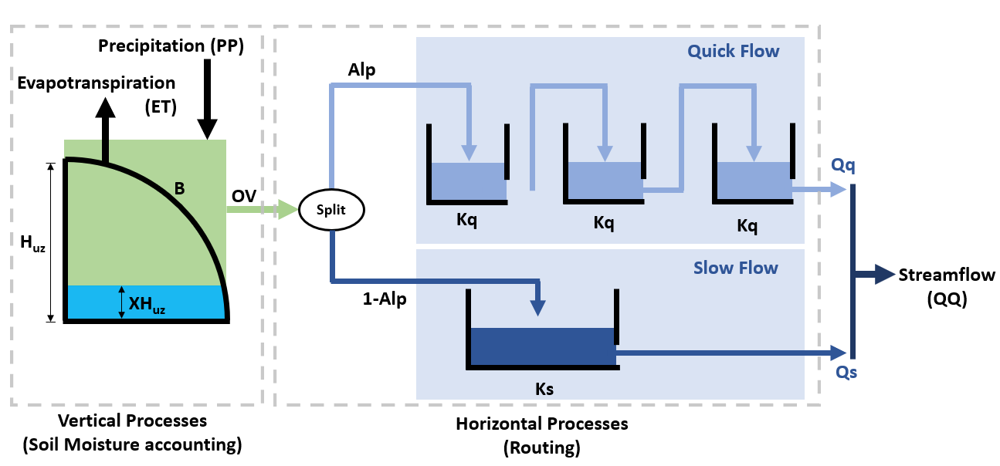

B. Jupyter Notebook Tutorials#
B.1. Fishery Dynamics Tutorial#
Note
B.1.1. Tutorial: Sensitivity Analysis (SA) to discover factors shaping consequential dynamics#
This notebook demonstrates the application of sensitivity analysis to discover factors that shape the behavior modes of a socio-ecological system with dynamic human action.
The system of differential equations below represent a system of prey (defined in the equation below as x) and predator (defined as y) fish, with a human actor harvesting the prey fish. You can read more about this system at Hadjimichael et al. (2020).

The table below defines the parameters in the system and also denotes the baseline and ranges associated with each uncertain parameter.

The system is simple but very rich in the dynamic behaviors it exhibits. This complexity is accompanied by the presence of several equilibria that come in and out of existence with different parameter values. The equilibria also change in their stability according to different parameter values, giving rise to different behavior modes as shown by the diverse predator and prey abundace trajectories in the figure below.

In the unharvested system (without the human actor) the stability of several of these equilibria can be derived analytically. The task becomes significantly more difficult when the adaptive human actor is introduced, deciding to harvest the system at different rates according to their objectives and preferences.
Sensitivity analysis methods can help us identify the factors that most control these dynamics by exploring the space of parameter values and seeing how system outputs change as a result.
Through previously conducted optimization, there already exists a set of potential harvesting strategies that were identified in pursuit of five objectives:
Maximize Harvesting Discounted Profits (Net Present Value)
Minimize Prey Population Deficit
Minimize Longest Duration of Consecutive Low Harvest
Maximize Worst Harvest Instance
Minimize Harvest Variance
The identified harvesting strategies also meet the necessary constraint of not causing inadvertent predator collapse.
We will be examining the effects of parametric uncertainty on these identified strategies, particularly focusing on two strategies: one selected to maximize harvesting profits and one identified through previous analysis to perform ‘well enough’ for all objectives across a wide range of states of the world (referred to as the ‘robust’ harvesting policy).
B.1.1.1. Let’s get started!#
In this tutorial, we will be loading in data that has been produced in Hadjimichael et al. (2020). Before we start our analysis, we’ll load the relevant Python libraries.
# Import necessary libraries
import msdbook
import numpy as np
import matplotlib.pyplot as plt
from SALib.sample import saltelli
from SALib.analyze import sobol
from matplotlib import patheffects as pe
# load example data
from msdbook.install_supplement import install_package_data
install_package_data()
%matplotlib inline
%config InlineBackend.print_figure_kwargs = {'bbox_inches':None}
Downloading example data for msdbook version 0.1.5...
Unzipped: /srv/conda/envs/notebook/lib/python3.7/site-packages/msdbook/data/uncertain_params_bounds.txt
Unzipped: /srv/conda/envs/notebook/lib/python3.7/site-packages/msdbook/data/sa_metric_s1.npy
Unzipped: /srv/conda/envs/notebook/lib/python3.7/site-packages/msdbook/data/sa_vary_delta.npy
Unzipped: /srv/conda/envs/notebook/lib/python3.7/site-packages/msdbook/data/sa_by_mth_s1.npy
Unzipped: /srv/conda/envs/notebook/lib/python3.7/site-packages/msdbook/data/solutions.resultfile
Unzipped: /srv/conda/envs/notebook/lib/python3.7/site-packages/msdbook/data/3704614_heatmap.npy
Unzipped: /srv/conda/envs/notebook/lib/python3.7/site-packages/msdbook/data/LHsamples_original_1000.txt
Unzipped: /srv/conda/envs/notebook/lib/python3.7/site-packages/msdbook/data/3704614_pseudo_r_scores.csv
Unzipped: /srv/conda/envs/notebook/lib/python3.7/site-packages/msdbook/data/param_values.csv
Unzipped: /srv/conda/envs/notebook/lib/python3.7/site-packages/msdbook/data/sa_by_yr_s1.npy
Unzipped: /srv/conda/envs/notebook/lib/python3.7/site-packages/msdbook/data/sa_by_mth_delta.npy
Unzipped: /srv/conda/envs/notebook/lib/python3.7/site-packages/msdbook/data/7000550_pseudo_r_scores.csv
Unzipped: /srv/conda/envs/notebook/lib/python3.7/site-packages/msdbook/data/collapse_days.csv
Unzipped: /srv/conda/envs/notebook/lib/python3.7/site-packages/msdbook/data/hymod_params_256samples.npy
Unzipped: /srv/conda/envs/notebook/lib/python3.7/site-packages/msdbook/data/sa_vary_s1.npy
Unzipped: /srv/conda/envs/notebook/lib/python3.7/site-packages/msdbook/data/7000550_heatmap.npy
Unzipped: /srv/conda/envs/notebook/lib/python3.7/site-packages/msdbook/data/7200799_heatmap.npy
Unzipped: /srv/conda/envs/notebook/lib/python3.7/site-packages/msdbook/data/sa_by_yr_delta.npy
Unzipped: /srv/conda/envs/notebook/lib/python3.7/site-packages/msdbook/data/7200799_pseudo_r_scores.csv
Unzipped: /srv/conda/envs/notebook/lib/python3.7/site-packages/msdbook/data/LeafCatch.csv
Unzipped: /srv/conda/envs/notebook/lib/python3.7/site-packages/msdbook/data/hymod_simulations_256samples.csv
Unzipped: /srv/conda/envs/notebook/lib/python3.7/site-packages/msdbook/data/Robustness.txt
B.1.1.2. Step 1: Load identified solutions and explore performance#
Here we load in the solution set obtained in Hadjimichael et al. (2020). The solution set contains the decision variables and objectives associated with a variety of harvesting policies. For this tutorial, we focus on comparing two policies: harvesting profits and one that performs robustly across all objectives. Below, we are reading in the decision variables and objectives from an external file that can be found within the msdbook package data.
robustness = msdbook.load_robustness_data()
results = msdbook.load_profit_maximization_data()
robust_solution = np.argmax(robustness[:,-1]) #pick robust solution
profit_solution = np.argmin(results[:,6]) #pick profitable solution
objective_performance = -results[:,6:] #Retain objective values
# Get decision variables for each of the policies
highprofitpolicy = results[profit_solution,0:6]
mostrobustpolicy = results[robust_solution,0:6]
Next we plot the identified solutions with regards to their objective performance in a parallel axis plot
Tip
View the source code used to create this plot here: plot_objective_performance
ax, ax1 = msdbook.plot_objective_performance(objective_performance, profit_solution, robust_solution)

The solution set from the optimization in Hadjimichael et al. (2020) are presented in a parallel axis plot where each of the five objectives (and one constraint) are represented as an axis. Each solution on the Pareto front is represented as a line where the color of the line indicates the value of the NPV objective. The preference for objective values is in the upward direction. Therefore, the ideal solution would be a line straight across the top of the plot that satisfies every objective. However, no such line exists because there are tradeoffs when sets of objectives are prioritized over the others. When lines cross in between axes, this indicates a tradeoff between objectives (as seen in the first two axes).The solution that is most robust in the NPV objective has the highest value on the first axis and is outlined in dark gold. The solution that is most robust across all objectives is outlined in a brighter yellow. A parallel axis is an effective visual to characterize high-dimensional tradeoffs in the system and visualize differences in performance across policies.
B.1.1.3. Step 2: Use SALib to generate a sample for a Sobol sensitivity analysis#
In Step 1, we showed how the optimized harvesting policies performed in the objective space, which utilized the baseline parameters outlined in the table above. Now, we are interested in understanding how sensitive our two policies are to alternative states of the world that may be characterized by different parameter values. To do so, we first need to define the problem dictionary that allows us to generate these alternative states of the world.
# Set up SALib problem
problem = {
'num_vars': 9,
'names': ['a', 'b', 'c', 'd', 'h', 'K', 'm', 'sigmaX', 'sigmaY'],
'bounds': [[0.002, 2], [0.005, 1], [0.2, 1], [0.05, 0.2], [0.001, 1],
[100, 5000], [0.1, 1.5], [0.001, 0.01], [0.001, 0.01]]
}
Then we use the following command to generate a Saltelli sample from these defined ranges:
param_values = saltelli.sample(problem, 1024, calc_second_order=False)
Generally, it is a good idea to save the result of the sample since it is often reused and regenerating it produces a different sample set. For this reason, we will load one from file that was previously generated.
# load previously generated Saltelli sample from our msdbook package data
param_values = msdbook.load_saltelli_param_values()
B.1.1.4. Step 3: Evaluate the system over all generated states of the world#
Now we re-evaluate how well the policies do in the new states of the world. In order to characterize failure of a policy, we identify the states where the predator population collapses, as an inadvertent consequence of applying the harvesting strategy under a state of the world different from the one originally assumed. Due to how long this step takes to execute within the tutorial, we will read in the solutions from an external file. However, the block of code below shows how evaluation can be implemented.
# create array to store collapse values under both policies
collapse_days = np.zeros([len(param_values), 2])
# evaluate performance under every state
for i in range(len(param_values)):
additional_inputs = np.append(['Previous_Prey'],
[param_values[i,0],
param_values[i,1],
param_values[i,2],
param_values[i,3],
param_values[i,4],
param_values[i,5],
param_values[i,6],
param_values[i,7],
param_values[i,8]])
collapse_days[i,0]=fish_game(highprofitpolicy, additional_inputs)[1][0]
collapse_days[i,1]=fish_game(mostrobustpolicy, additional_inputs)[1][0]
# load the simulation data from our msdbook package data
collapse_days = msdbook.load_collapse_data()
B.1.1.5. Step 4: Calculate sensitivity indices#
Now we use a Sobol sensitivity analysis to calculate first-order, second-order, and total-order sensitivity indices for each parameter and for each of the two policies. These indicies help determine which factors explain the most variability in the number of days of predator population collapse.
#Perform the Sobol SA for the profit-maximizing solution
Si_profit = sobol.analyze(problem, collapse_days[:, 0],
calc_second_order=False,
conf_level=0.95,
print_to_console=True)
#Perform the Sobol SA for the robust solution
Si_robustness = sobol.analyze(problem,
collapse_days[:, 1],
calc_second_order=False,
conf_level=0.95,
print_to_console=True)
ST ST_conf
a 0.226402 0.036146
b 0.066819 0.013347
c 0.004395 0.004023
d 0.024509 0.006993
h 0.009765 0.005488
K 0.020625 0.009494
m 0.897971 0.066470
sigmaX 0.000136 0.000149
sigmaY 0.000739 0.001040
S1 S1_conf
a 0.087936 0.044236
b 0.000554 0.021474
c -0.002970 0.004590
d 0.001206 0.015881
h 0.004554 0.007998
K 0.003843 0.012661
m 0.751301 0.071862
sigmaX -0.000325 0.001245
sigmaY -0.001887 0.002768
Looking at the total-order indices, (ST) factors \(m\), \(a\), \(b\), \(d\) and \(K\) explain a non-negligible amount of variance therefore have an effect on the stability of this system. Looking at the first-order indices (S1), we also see that besides factors \(m\) and \(a\), all other factors are important in this system through their interactions, which make up the difference between their S1 and ST indices. This shows the danger of limiting sensitivity analyses to first order effects, as factor importance might be significantly misjudged.
These findings are supported by the analytical condition of equilibrium stability in this system:
In an unharvested system, this condition is both necessary and sufficient for the equilibrium of the two species coexisting to be stable.
When adaptive human action is introduced however, this condition is still necessary, but no longer sufficient, as harvesting reduces the numbers of prey fish and as a result reduces the resources for the predator fish. Since this harvesting value is not constant, but can dynamically adapt according to the harvester’s objectives, it cannot be introduced into this simple equation.
B.1.1.6. Step 5: Explore relationship between uncertain factors and performance#
In the following steps, we will use the results of our sensitivity analysis to investigate the relationships between parametric uncertainty, equilibrium stability and the performance of the two policies.
We can use the top three factors identified (\(m\), \(a\), and \(b\)) to visualize the performance of our policies in this three-dimensional parametric space.
We first define the stability condition, as a function of \(b\) and \(m\), and calculate the corresponding values of \(a\).
def inequality(b, m, h, K):
return ((b**m)/(h*K)**(1-m))
# boundary interval that separates successful and failed states of the world
b = np.linspace(start=0.005, stop=1, num=1000)
m = np.linspace(start=0.1, stop=1.5, num=1000)
h = np.linspace(start=0.001, stop=1, num=1000)
K = np.linspace(start=100, stop=2000, num=1000)
b, m = np.meshgrid(b, m)
a = inequality(b, m, h, K)
a = a.clip(0,2)
Tip
View the source code used to create this plot here: plot_factor_performance
# generate plot
ax1, ax2 = msdbook.plot_factor_performance(param_values, collapse_days, b, m, a)

These figures show the combinations of factors that lead to success or failure in different states of the world for the profit-maximizing and robust policies. Each point is a state of the world, characterized by specific values of the parameters, and ideally, we would like the color of the point to be blue, to represent that there are a low number of days with a predator collapse in that world. The gray curve denotes the highly non-linear nature of the boundary, defined by the stability condition, that separates successful and failed states of the world. The figures demonstrate the following key points:
First, as asserted above, the policies interact with the system in different and complex ways. In the presence of human action, the stability condition is not sufficient in determining whether the policy will succeed, even though it clearly shapes the system in a fundamental manner.
Secondly, the robust policy manages to avoid collapse in many more of the sampled states of the world, indicated by the number of blue points. The robust policy avoids collapse in 31% of worlds versus 14% in the profit-maximizing policy.This presents a clear tradeoff between profit-maximizing performance androbustness against uncertainty.
B.1.1.7. Tips to Apply Sobol SA and Scenario Discovery to your Problem#
In this tutorial, we demonstrated a Sobol SA to identify the most important factors driving the behavior of a system (i.e. the number of the collapse days). In order to apply this methodology to your problem, you will need to have a set of optimized policies for your system that you are interested in analyzing. The general workflow is as follows:
Choose sampling bounds for your parameters and set up the problem dictionary as in Step 2 above.
Generate samples, or alternative states of the world using the
saltelli.samplefunction.Evaluate your policies on the alternative states of the world. For your application, you will also need to develop a rule for determining success or failure of your policy in a new SOW. In this tutorial, success was denoted by a small number of collapse days. Ultimately, the rule will be specific to your application and can include various satisficing criteria.
Calculate the Sobol indices and discover the most important parameters driving success and failure.
Finally, use a similar plotting procedure as in step 5 to identify the combination of parameter values that lead to success and failure in the system.
B.2. Sobol SA Tutorial#
Note
B.2.1. Tutorial: Sensitivity Analysis (SA) using the Saltelli sampling scheme with Sobol SA#
In this tutorial, we will set up a workflow to investigate how sensitive the output of a function is to its inputs. Why might you want to do this? Imagine that this function represents a complex system, such as the rainfall-runoff process of a watershed model, and that you, the researcher, want to investigate how your choice of input parameter values are affecting the model’s characterization of runoff in the watershed. Your parameter values are likely uncertain and can take on any value in a pre-defined range. Using a Sobol SA will allow you to sample different values of your parameters and calculate how sensitive your output of interest is to certain parameters. Below, we demonstrate Sobol SA for a simple function to illustrate the method, but the workflow can be applied to your own problem of interest!
In order to conduct this analysis, we will use the popular Python Sensitivity Analysis Library (SALib) to:
Generate a problem set as a dictionary for our Ishigami function that has three inputs
Generate 2048 samples for our problem set using the Saltelli [1] [2] sampling scheme
Execute the Ishigami function for each of our samples and gather the outputs
Compute the sensitivity analysis to generate first-order and total-order sensitivity indices using the Sobol [3] method
Interpret the meaning of our results
B.2.1.1. Let’s get started!#
NOTE: Content from this tutorial is taken directly from the SALib “Basics” walkthrough.
# Import relevant libraries
import matplotlib.pyplot as plt
import SALib.sample.sobol as sobol_sample
from SALib.analyze import sobol
from SALib.test_functions import Ishigami
B.2.1.2. Step 1: Generate the problem dictionary#
The Ishigami function is of the form:
The function has three inputs, 𝑥1, 𝑥2, 𝑥3 where 𝑥𝑖 ∈ [−𝜋, 𝜋]. The constants \(a\) and \(b\) are defined as 7.0 and 0.1 respectively.
#Create a problem dictionary. Here we supply the number of variables, the names of each variable, and the bounds of the variables.
problem = {
'num_vars': 3,
'names': ['x1', 'x2', 'x3'],
'bounds': [[-3.14159265359, 3.14159265359],
[-3.14159265359, 3.14159265359],
[-3.14159265359, 3.14159265359]]
}
B.2.1.3. Step 2: Generate samples using the Saltelli sampling scheme#
Sobol SA requires the use of the Saltelli sampling scheme. The output of
the saltelli.sample function is a NumPy array that is of shape 2048
by 3. The sampler generates 𝑁∗(2𝐷+2) samples, where in this example, N
is 256 (the argument we supplied) and D is 3 (the number of model
inputs), yielding 2048 samples. The keyword argument
calc_second_order=False will exclude second-order indices, resulting
in a smaller sample matrix with 𝑁∗(𝐷+2) rows instead. Below, we plot the
resulting Saltelli sample.
# Generate parmeter values using the saltelli.sample function
param_values = sobol_sample.sample(problem, 256)
print(f"`param_values` shape: {param_values.shape}")
param_values shape: (2048, 3)
# Plot the 2048 samples of the parameters
fig = plt.figure(figsize = (7, 5))
ax = plt.axes(projection ="3d")
ax.scatter3D(param_values[:,0], param_values[:,1], param_values[:,2])
ax.set_xlabel('X1 Parameter')
ax.set_ylabel('X2 Parameter')
ax.set_zlabel('X3 Parameter')
plt.title("Saltelli Sample of Parameter Values")
plt.show()

B.2.1.4. Step 3: Execute the Ishigami function over our sample set#
SALib provides a nice wrapper to the Ishigami function that allows the
user to directly pass the param_values array we just generated into
the function directly.
Y = Ishigami.evaluate(param_values)
B.2.1.5. Step 4: Compute first-, second-, and total-order sensitivity indices using the Sobol method#
The sobol.analyze function will use our problem dictionary and the
result of the Ishigami runs (Y) to compute first-, second-, and
total-order indicies.
Si = sobol.analyze(problem, Y)
Si is a Python dict with the keys “S1”, “S2”, “ST”, “S1_conf”,
“S2_conf”, and “ST_conf”. The _conf keys store the corresponding
confidence intervals, typically with a confidence level of 95%. Use the
keyword argument print_to_console=True to print all indices. Or, we
can print the individual values from Si as shown in the next step.
B.2.1.6. Step 5: Interpret our results#
We execute the following code and take a look at our first-order indices
(S1) for each of our three inputs. These indicies can be interpreted
as the fraction of variance in the output that is explained by each
input individually.
first_order = Si['S1']
print('First-order:')
print(f"x1: {first_order[0]}, x2: {first_order[1]}, x3: {first_order[2]}")
First-order:
x1: 0.3184242969763115, x2: 0.4303808201623416, x3: 0.022687722804980225
If we were to rank the importance of the inputs in how much they individually explain the variance in the output, we would rank them from greatest to least importance as follows: 𝑥2, 𝑥1 and then 𝑥3. Since 𝑥3 only explains 2% of the output variance, it does not explain output variability meaningfully. Thus, this indicates that there is contribution to the output variance by 𝑥2 and 𝑥1 independently, whereas 𝑥3 does not contribute to the output variance. Determining what inputs are most important or what index value is meaningful is a common question, but one for which there is no general rule or threshold. This question is problem and context-dependent, but procedures have been identified to rank order influential inputs and which can be used to identify the least influential factors. These factors can be fixed to simplify the model [4] [5] [6].
Next, we evaluate the total-order indices, which measure the contribution to the output variance caused by varying the model input, including both its first-order effects (the input varying alone) and all higher-order interactions across the input parameters.
total_order = Si['ST']
print('Total-order:')
print(f"x1: {total_order[0]}, x2: {total_order[1]}, x3: {total_order[2]}")
Total-order:
x1: 0.5184119098161343, x2: 0.41021260250026054, x3: 0.2299058431439953
The magnitude of the total order indices are substantially larger than the first-order indices, which reveals that higher-order interactions are occurring, i.e. that the interactions across inputs are also explaining some of the total variance in the output. Note that 𝑥3 has non-negligible total-order indices, which indicates that it is not a consequential parameter when considered in isolation, but becomes consequential and explains 25% of variance in the output through its interactions with 𝑥1 and 𝑥2.
Finally, we can investigate these higher order interactions by viewing the second-order indices. The second-order indicies measure the contribution to the output variance caused by the interaction between any two model inputs. Some computing error can appear in these sensitivity indices, such as negative values. Typically, these computing errors shrink as the number of samples increases.
second_order = Si['S2']
print("Second-order:")
print(f"x1-x2: {second_order[0,1]}")
print(f"x1-x3: {second_order[0,2]}")
print(f"x2-x3: {second_order[1,2]}")
Second-order:
x1-x2: -0.043237389723234154
x1-x3: 0.17506452088709862
x2-x3: -0.03430682392607577
We can see that there are strong interactions between 𝑥1 and 𝑥3. Note that in the Ishigami function, these two variables are multiplied in the last term of the function, which leads to interactive effects. If we were considering first order indices alone, we would erroneously assume that 𝑥3 explains no variance in the output, but the second-order and total order indices reveal that this is not the case. It’s easy to understand where we might see interactive effects in the case of the simple Ishigami function. However, it’s important to remember that in more complex systems, there may be many higher-order interactions that are not apparent, but could be extremely consequential in explaining the variance of the output.
B.2.1.7. Tips to Apply Sobol SA to Your Own Problem#
In this tutorial, we demonstrated how to apply an SA analysis to a simple mathematical test function. In order to apply a Sobol SA to your own problem, you will follow the same general workflow that we defined above. You will need to:
Choose sampling bounds for your parameters and set up the problem dictionary as in Step 1 above.
Generate samples using the
saltelli.samplefunction. This step is problem-dependent and note that the Sobol method can be computationally intensive depending on the model being analyzed. For example, for a simple rainfall-runoff model such as HYMOD, it has been recommended to run a sample size of at least N = 10,000 (which translates to 60,000 model runs). More complex models will be slower to run and will also require more samples to calculate accurate estimates of Sobol indices. Once you complete this process, pay attention to the confidence bounds on your sensitivity indices to see whether you need to run more samples.Run the parameter sets through your model. In the example above, the Ishigami function could be evaluated through SALib since it is a built in function. For your application, you will need to run these parameter sets through the problem externally and save the output. The output file should contain one row of output values for each model run.
Calculate the Sobol indices. Now, the Y will be a numpy array with your external model output and you will need to include the parameter samples as an additional argument.
Finally, we interpet the results. If the confidence intervals of your dominant indices are larger than roughly 10% of the value itself, you may want to consider increasing your sample size as computation permits. You should additionally read the references noted in Step 5 above to understand more about identifying important factors.
References
B.3. Logistic Regression Tutorial#
Note
B.3.1. Tutorial: Logistic Regression for Factor Mapping#
This tutorial replicates a scenario discovery analysis performed in Hadjimichael et al. (2020).
B.3.1.1. Background#
Planners in the the Upper Colorado River Basin (UCRB, shown in the figure below) are seeking to understand the vulnerability of water users to uncertainties stemming from climate change, population growth and water policy changes. The UCRB spans 25,682 km2 in western Colorado and is home to approximately 300,000 residents and 1,012 km2 of irrigated land. Several thousand irrigation ditches divert water from the main river and its tributaties for irrigation (shown as small black dots in the figure). Transmountain diversions of approximately 567,400,000 m3 per year are exported for irrigation, industrial and municipal uses in northern and eastern Colorado, serving the major population centers of Denver and Colorado Springs. These diversions are carried through tunnels, shown as large black dots in the figure.

An important planning consideration is the water rights of each user, defined by seniority across all water uses (irrigation diversions, transboundary diversions, power plants etc.) in the basin. To assess the vulnerability of users with varying degrees of water rights seniority, planners simulate the system across an ensemble of scenarios using the state of Colorado’s StateMod platform. The model simulates streamflow, diversions, instream demands, and reservoir operations.
Hadjimichael et al. (2020) employ an exploratory analysis by simulating a large ensemble of plausible scenarios using StateMod and then identifying consequential decision-relevant combinations of uncertain factors, termed scenario discovery. Focusing on decision-relevant metrics (metrics that are important to the user, the scenario discovery is applied to the water shortages experienced by each individual user (i.e., not on a single basin-wide or sector-wide metric). For this training example, we’ll be performing scenario discovery for three different water users: two irrigation users and one municipal user.
B.3.1.2. Let’s get started!#
In this tutorial, we will be loading in data that has been produced in Hadjimichael et al. (2020). Before we start our analysis, we’ll load the relevant Python libraries, example data, and information for the three users.
# Import libraries
import numpy as np
import pandas as pd
import matplotlib as mpl
import matplotlib.pyplot as plt
from msdbook.package_data import load_basin_param_bounds, load_lhs_basin_sample, load_user_heatmap_array, load_user_pseudo_scores
from msdbook.utils import fit_logit, plot_contour_map
# Select the IDs for the three users that we will perform the analysis for
all_IDs = ['7000550','7200799','3704614']
usernames = ['Medium seniority irrigation',
'Low seniority irrigation',
'Transbasin municipal diversion']
nStructures = len(all_IDs)
# Install package data
from msdbook.install_supplement import install_package_data
install_package_data()
Downloading example data for msdbook version 0.1.5...
Unzipped: /srv/conda/envs/notebook/lib/python3.7/site-packages/msdbook/data/uncertain_params_bounds.txt
Unzipped: /srv/conda/envs/notebook/lib/python3.7/site-packages/msdbook/data/sa_metric_s1.npy
Unzipped: /srv/conda/envs/notebook/lib/python3.7/site-packages/msdbook/data/sa_vary_delta.npy
Unzipped: /srv/conda/envs/notebook/lib/python3.7/site-packages/msdbook/data/sa_by_mth_s1.npy
Unzipped: /srv/conda/envs/notebook/lib/python3.7/site-packages/msdbook/data/solutions.resultfile
Unzipped: /srv/conda/envs/notebook/lib/python3.7/site-packages/msdbook/data/3704614_heatmap.npy
Unzipped: /srv/conda/envs/notebook/lib/python3.7/site-packages/msdbook/data/LHsamples_original_1000.txt
Unzipped: /srv/conda/envs/notebook/lib/python3.7/site-packages/msdbook/data/3704614_pseudo_r_scores.csv
Unzipped: /srv/conda/envs/notebook/lib/python3.7/site-packages/msdbook/data/param_values.csv
Unzipped: /srv/conda/envs/notebook/lib/python3.7/site-packages/msdbook/data/sa_by_yr_s1.npy
Unzipped: /srv/conda/envs/notebook/lib/python3.7/site-packages/msdbook/data/sa_by_mth_delta.npy
Unzipped: /srv/conda/envs/notebook/lib/python3.7/site-packages/msdbook/data/7000550_pseudo_r_scores.csv
Unzipped: /srv/conda/envs/notebook/lib/python3.7/site-packages/msdbook/data/collapse_days.csv
Unzipped: /srv/conda/envs/notebook/lib/python3.7/site-packages/msdbook/data/hymod_params_256samples.npy
Unzipped: /srv/conda/envs/notebook/lib/python3.7/site-packages/msdbook/data/sa_vary_s1.npy
Unzipped: /srv/conda/envs/notebook/lib/python3.7/site-packages/msdbook/data/7000550_heatmap.npy
Unzipped: /srv/conda/envs/notebook/lib/python3.7/site-packages/msdbook/data/7200799_heatmap.npy
Unzipped: /srv/conda/envs/notebook/lib/python3.7/site-packages/msdbook/data/sa_by_yr_delta.npy
Unzipped: /srv/conda/envs/notebook/lib/python3.7/site-packages/msdbook/data/7200799_pseudo_r_scores.csv
Unzipped: /srv/conda/envs/notebook/lib/python3.7/site-packages/msdbook/data/LeafCatch.csv
Unzipped: /srv/conda/envs/notebook/lib/python3.7/site-packages/msdbook/data/hymod_simulations_256samples.csv
Unzipped: /srv/conda/envs/notebook/lib/python3.7/site-packages/msdbook/data/Robustness.txt
B.3.1.3. Step 1: Load Latin hypercube sample and set up problem#
To examine regional vulnerability, we generate an ensemble of plausible
future states of the world (SOWs) using Latin Hypercube Sampling. For
this tutorial, we’ll load a file containing 1,000 samples across 14
parameters. The sampled parameters encompass plausible changes to the
future state of the basin, including changes to hydrology, water demands
(irrigation, municipal & industry, transbasin), and institutional and
environmental factors (environmental flows, reservoir storage, operation
of the Shoshone Power Plant). These samples are taken from ranges
identified in param_bounds. Below we load in the 1000 samples, the
range of values that the samples can take for each parameter, and the
parameter names. More information on what each parameter constitutes can
be found in Table 1 of Hadjimichael et al., 2020.
# Identify the bounds for each of the 14 parameters
param_bounds = msdbook.load_basin_param_bounds()
#Load in the parameter samples
LHsamples = msdbook.load_lhs_basin_sample()
#Create an array of the parameter names
param_names=['Irrigation demand multiplier','Reservoir loss','Transbasin demand multiplier',
'Municipal & industrial multiplier', 'Shoshone','Environmental flows',
'Evaporation change','Mean dry flow','Dry flow variance',
'Mean wet flow','Wet flow variance','Dry-dry probability',
'Wet-wet probability', 'Snowmelt shift']
B.3.1.4. Step 2: Define decision-relevant metrics for illustration#
Scenario discovery attempts to identify parametric regions that lead to ‘success’ and ‘failure’. For this demonstration we’ll be defining ‘success’ as states of the world where a shortage level doesn’t exceed its historical frequency.
B.3.1.5. Step 3: Run the logistic regression#
Logistic regression estimates the probability that a future SOW will be classified as a success or failure given a set of performance criteria. A logistic regression model is defined by:
where \(p_i\) is the probability the performance in the \(i^{th}\) SOW will be classified as a success, \(X_i\) is the vector of covariates describing the \(i^{th}\) SOW, and \(\beta\) is the vector of coefficients describing the relationship between the covariates and the response, which here will be estimated using maximum likelihood estimation.
A logistic regression model was fit to the ensemble of SOWs using the performance criteria defined in step 2. Logistic regression modeling was conducted using the Statsmodel Python package. The data required for the full analysis is too large to include in this tutorial, but results can be found in the data file loaded below.
The results files contain the occurrence of different shortage frequency and magnitude combinations under the experiment, in increments of 10, between 0 and 100. These combinations (100 for each user) are alternative decision-relevant metrics that can be used for scenario discovery.
# Set arrays for shortage frequencies and magnitudes
frequencies = np.arange(10, 110, 10)
magnitudes = np.arange(10, 110, 10)
realizations = 10
# Load performance and pseudo r scores for each of the users
results = [msdbook.load_user_heatmap_array(all_IDs[i]) / 100 for i in range(len(all_IDs))]
B.3.1.6. Step 4: Factor ranking#
To rank the importance of each uncertain factor, we utilize McFadden’s psuedo-R2, a measure that quantifies the improvement of the model when utilizing each given predictor as compared to prediction using the mean of the data set:
Here \(ln \hat{L}(M_{full})\) is the log likelihood of the full model (including the predictor) and \(ln \hat{L}(M_{intercept})\) is the log likelihood of the intercept model (which predicts the mean probability of success across all SOWs).
Higher values of McFadden’s pseudo-R2 indicate higher factor importance (when the likelihood of the full model approaches one, the ratio of the likelihood of the full model compared to the intercept model will get very small).
# Load the pseudo-R^2 scores
scores = [msdbook.load_user_pseudo_scores(all_IDs[i]) for i in range(len(all_IDs))]
# Select indices of frequency and magnitudes that will be used for the visualization
freq = [1,0,0]
mag = [7,3,7]
B.3.1.7. Step 5: Draw factor maps#
The McFadden’s pseudo-R2 scores files contain preliminary logistic regression results on parameter importance for each of these combinations. Using these pseudo-R2 scores we will identify the two most important factors for each metric which we’ll use to generate the final scenario discovery maps (note: there may be more than two important metrics for each user, but here we will demonstrate by mapping two).
# setup figure
fig, axes = plt.subplots(3,1, figsize=(6,18), tight_layout=True)
fig.patch.set_facecolor('white')
for i in range(len(axes.flat)):
ax = axes.flat[i]
allSOWsperformance = results[i]
all_pseudo_r_scores = scores[i]
# construct dataframe
dta = pd.DataFrame(data=np.repeat(LHsamples, realizations, axis = 0), columns=param_names)
dta['Success'] = allSOWsperformance[freq[i],mag[i],:]
pseudo_r_scores = all_pseudo_r_scores[str(frequencies[freq[i]])+'yrs_'+str(magnitudes[mag[i]])+'prc'].values
top_predictors = np.argsort(pseudo_r_scores)[::-1][:2] #Sort scores and pick top 2 predictors
# define color map for dots representing SOWs in which the policy
# succeeds (light blue) and fails (dark red)
dot_cmap = mpl.colors.ListedColormap(np.array([[227,26,28],[166,206,227]])/255.0)
# define color map for probability contours
contour_cmap = mpl.colormaps.get_cmap('RdBu')
# define probability contours
contour_levels = np.arange(0.0, 1.05,0.1)
# define base values of the predictors
SOW_values = np.array([1,1,1,1,0,0,1,1,1,1,1,0,0,0]) # default parameter values for base SOW
base = SOW_values[top_predictors]
ranges = param_bounds[top_predictors]
# define grid of x (1st predictor), and y (2nd predictor) dimensions
# to plot contour map over
xgrid = np.arange(param_bounds[top_predictors[0]][0],
param_bounds[top_predictors[0]][1], np.around((ranges[0][1]-ranges[0][0])/500,decimals=4))
ygrid = np.arange(param_bounds[top_predictors[1]][0],
param_bounds[top_predictors[1]][1], np.around((ranges[1][1]-ranges[1][0])/500,decimals=4))
all_predictors = [ dta.columns.tolist()[i] for i in top_predictors]
dta['Interaction'] = dta[all_predictors[0]]*dta[all_predictors[1]]
# logistic regression here
predictor_list = [all_predictors[i] for i in [0,1]]
result = msdbook.fit_logit(dta, predictor_list)
# plot contour map
contourset = msdbook.plot_contour_map(ax, result, dta, contour_cmap,
dot_cmap, contour_levels, xgrid,
ygrid, all_predictors[0], all_predictors[1], base)
ax.set_title(usernames[i])
# set up colorbar
cbar_ax = fig.add_axes([0.98, 0.15, 0.05, 0.7])
cbar = fig.colorbar(contourset, cax=cbar_ax)
cbar_ax.set_ylabel('Probability of Success', fontsize=16)
cbar_ax.tick_params(axis='y', which='major', labelsize=12)
/srv/conda/envs/notebook/lib/python3.7/site-packages/statsmodels/base/model.py:127: ValueWarning: unknown kwargs ['disp']
warnings.warn(msg, ValueWarning)
Optimization terminated successfully.
Current function value: 0.378619
Iterations 8
Optimization terminated successfully.
Current function value: 0.397285
Iterations 8
Optimization terminated successfully.
Current function value: 0.377323
Iterations 8
The figure above demonstrates how different combinations of the uncertain factors lead to success or failure in different states of the world, which are denoted by the blue and red dots respectively. The probability of success and failure are further denoted by the contours in the figure. Several insights can be drawn from this figure.
First, using metrics chosen to be decision-relevant (specific to each user) causes different factors to be identified as most important by this scenario-discovery exercise (the x- and y-axes for each of the subplots). In other words, depending on what the decision makers of this system want to prioritize they might choose to monitor different uncertain factors to track performance.
Second, in the top panel, the two identified factors appear to also have an interactive effect on the metric used (shortages of a certain level and frequency in this example). In terms of scenario discovery, the Patient Rule Induction Method (PRIM) or Classification And Regression Trees (CART) would not be able to delineate this non-linear space and would therefore misclassify parameter combinations as ‘desirable’ when they were in fact undesirable, and vice versa.
Lastly, logistic regression also produces contours of probability of success, i.e. different factor-value combinations are assigned different probabilities that a shortage level will be exceeded. This allows the decision makers to evaluate these insights while considering their risk aversion.
B.3.1.8. Tips to Apply Scenario Discovery to Your Own Problem#
In this tutorial, we demonstrated how to perform a scenario discovery analysis for three different users in the UCRB. The analysis allowed us to determine which parameters the users would be most affected by and to visualize how different ranges of these parameters lead to success and failure for different users. This framework can be applicable to any other application where it is of interest to characterize success and failure based on uncertain parameter ranges. In order to apply the same framework to your own problem:
Choose sampling bounds for your parameters of interest, which will represent uncertainties that characterize your system.
Generate samples for these parameters (this can be done using the
saltelli.samplefunction or externally).Define what constitutes success and failure in your problem. In this tutorial, success was defined based on not surpassing the historical drought frequency. Choose a metric that is relevant to your problem and decision-makers that might be involved. If your model involves an optimization, you can also define metrics based on meeting certain values of these objectives.
Run the parameter sets through your model and calculate success and failure based on your metrics and across different users if applicable. This step will allow you to create the scatter plot part of the final figure.
If it is of interest, the contours on the figure can be created by fitting the logistic regression model in a similar manner as denoted in Steps 3 and 5 of the tutorial.
B.4. HYMOD Dynamics Tutorial#
Note
B.4.1. Tutorial: Sensitivity Analysis of the HYMOD Model#
The purpose of this tutorial is to demonstrate the global sensitivity analysis concepts and tools established in the Section 3.1 of the main text of this eBook. This demonstration will highlight the central role of design of experiments (Section 3.3), when implementing global sensitivity analysis tools described in Section 3.4.
We’ll explore these tools and concepts using the HYdrological MODel (HYMOD), a rainfall-runoff model developed and used for river flow forecasting. HYMOD was chosen for demonstration because its purpose is to abstract highly complex and non-linear systems. The methods demonstrated in this tutorial can be applied to numerical models that simulate other complex non-linear systems.
This tutorial will first introduce HYMOD and use it to simulate streamflows in a river basin. Next, we’ll employ sensitivity analysis concepts described in Section 3 of the main text to examine how values of HYMOD’s parameters impact streamflow predictions. Finally, we’ll explore how the effects of these parameters may change over time using time-varying sensitivity analysis.
The tutorial includes the following steps:
1.1 - Introduction to a simple hydrologic model (HYMOD)
1.2 - Input Data
1.3 - Running a basic simulation
1.4 - Model outputs
2.1 - Design of Experiments
2.2 - Sensitivity analysis for one output
2.3 - Sensitivity analysis across multiple outputs
2.4 - Time-varying sensitivity analysis
B.4.2. 1 - Introduction to HYMOD#
1.1 Overview
HYMOD is a hydrologic model (rainfall-runoff model) that simulates key hydrologic fluxes such as infiltration, streamflow and evapotranspiration. The model was originally developed and used for river flow forecasting, but it has also been been used to explore different sensitivity analysis (e.g., Herman et al., 2013), uncertainty quantification (e.g., Smith et al., 2008), and optimization (e.g., Ye et al., 2014) concepts.
HYMOD accepts two inputs - daily precipitation and daily potential evapotranspiration (PET)- and generates predictons of daily streamflow. HYMOD abstracts the highly non-linear process of runoff routing by dividing the flow into two components: quick flow, representing precipitation that quickly runs off the surface of the watershed into the stream, and slow flow, that moves through the soil and takes much longer to arrive at the stream.
To generate streamflow predictions, HYMOD first models vertical processes within the watershed to determine how much water infiltrates and evaporates from the soil at a given time step. It then determines how much water should be partitioned into quick flow and slow flow processes. Within each process it abstracts residence time (the time it takes a unit volume of water to move through the watershed and into the stream) using a series of “reservoirs” each with a calibrated residence time.
HYMOD’s representation of hydrologic processes are shown Figure 1 below and controlled by the following parameters:
\(H_{uz}\): the maximum water storage capacity of the soil (mm)
\(B_{exp}\): parameters describing the degree of spatial variability within the basin between 0 and Huz
\(Alp\): Fraction of runoff contributing to quick flow
\(K_q\): Quick flow residence time of linear infinite reservoir (the Kq values of all three linear reservoirs are the same)
\(K_s\): Slow flow residence time of linear infinite reservoir
HYMOD models the fraction of water that is stored in the soil \((F(XH_{uz}))\) using the following relationship:
where \(XH_{uz}\) is the water storage capacity of the soil; \(H_{uz}\) is the parameter describing basin maximum water storage capacity (mm); and \(B\) is the parameter describing the degree of spatial variability within the basin.
The portion of precipitation that exceeds the water storage capacity is treated as runoff.
To route runoff to streamflow, the excess runoff from the vertical processes is split into quick flow and slow flow. The proportion of runoff partitioned into quick flow and slow flow is determined by a parameter \(Alp\), which ranges between 0 and 1. Quick flow is routed through \(N\) identical quick flow tanks \(Q1, Q2... QN\) (shown above as \(N=3\)). The rate at which runoff moves through the quick flow system is described by the residence time of the quick flow tanks, \(Kq\) (day). Slow flow is routed through a parallel slow flow tank and the rate at which slow flow is routed is described by the slow flow residences time, \(Ks\) (day).
Citation: Wagener, T., Boyle, D. P., Lees, M. J., Wheater, H. S., Gupta, H. V., & Sorooshian, S. (2001). A framework for development and application of hydrological models. Hydrology and Earth System Sciences, 5(1), 13-26.
1.2 Input data
The HYMOD model only requires precipitation and potential evapotranspiration as inputs. For this example, we’ll run HYMOD using data from the Leaf River, a humid catchment located north of Collins Mississippi that has been widely used to explore HYMOD. The dataset also includes daily observed runoff that we later use to evaluate the performance of each sensitivity analysis sample set.
In the following section of code, we’ll load the necessary python libraries and read in the input file. For this exercise we’ll only use the first eleven years of data. The first five rows of the input dataset are printed to show what they look like:
import itertools
import math
import msdbook
import numpy as np
import pandas as pd
import seaborn as sns
import warnings
from matplotlib import pyplot as plt
import msdbook.hymod
from msdbook.package_data import load_hymod_input_file, load_hymod_params, load_hymod_simulation, load_hymod_monthly_simulations, load_hymod_annual_simulations, load_hymod_varying_simulations
from SALib.analyze import sobol
from sklearn import metrics
# load example data
from msdbook.install_supplement import install_package_data
install_package_data()
# load the Leaf River HYMOD input file
leaf_data = msdbook.load_hymod_input_file()
# extract the first eleven years of data
leaf_data = leaf_data.iloc[0:4015].copy()
print('Leaf River Data structure:')
# There are only three columns in the file including precipitation, potential evapotranspiration and streamflow
leaf_data.head()
Downloading example data for msdbook version 0.1.5...
Unzipped: /srv/conda/envs/notebook/lib/python3.7/site-packages/msdbook/data/uncertain_params_bounds.txt
Unzipped: /srv/conda/envs/notebook/lib/python3.7/site-packages/msdbook/data/sa_metric_s1.npy
Unzipped: /srv/conda/envs/notebook/lib/python3.7/site-packages/msdbook/data/sa_vary_delta.npy
Unzipped: /srv/conda/envs/notebook/lib/python3.7/site-packages/msdbook/data/sa_by_mth_s1.npy
Unzipped: /srv/conda/envs/notebook/lib/python3.7/site-packages/msdbook/data/solutions.resultfile
Unzipped: /srv/conda/envs/notebook/lib/python3.7/site-packages/msdbook/data/3704614_heatmap.npy
Unzipped: /srv/conda/envs/notebook/lib/python3.7/site-packages/msdbook/data/LHsamples_original_1000.txt
Unzipped: /srv/conda/envs/notebook/lib/python3.7/site-packages/msdbook/data/3704614_pseudo_r_scores.csv
Unzipped: /srv/conda/envs/notebook/lib/python3.7/site-packages/msdbook/data/param_values.csv
Unzipped: /srv/conda/envs/notebook/lib/python3.7/site-packages/msdbook/data/sa_by_yr_s1.npy
Unzipped: /srv/conda/envs/notebook/lib/python3.7/site-packages/msdbook/data/sa_by_mth_delta.npy
Unzipped: /srv/conda/envs/notebook/lib/python3.7/site-packages/msdbook/data/7000550_pseudo_r_scores.csv
Unzipped: /srv/conda/envs/notebook/lib/python3.7/site-packages/msdbook/data/collapse_days.csv
Unzipped: /srv/conda/envs/notebook/lib/python3.7/site-packages/msdbook/data/hymod_params_256samples.npy
Unzipped: /srv/conda/envs/notebook/lib/python3.7/site-packages/msdbook/data/sa_vary_s1.npy
Unzipped: /srv/conda/envs/notebook/lib/python3.7/site-packages/msdbook/data/7000550_heatmap.npy
Unzipped: /srv/conda/envs/notebook/lib/python3.7/site-packages/msdbook/data/7200799_heatmap.npy
Unzipped: /srv/conda/envs/notebook/lib/python3.7/site-packages/msdbook/data/sa_by_yr_delta.npy
Unzipped: /srv/conda/envs/notebook/lib/python3.7/site-packages/msdbook/data/7200799_pseudo_r_scores.csv
Unzipped: /srv/conda/envs/notebook/lib/python3.7/site-packages/msdbook/data/LeafCatch.csv
Unzipped: /srv/conda/envs/notebook/lib/python3.7/site-packages/msdbook/data/hymod_simulations_256samples.csv
Unzipped: /srv/conda/envs/notebook/lib/python3.7/site-packages/msdbook/data/Robustness.txt
Leaf River Data structure:
| Precip | Pot_ET | Strmflw | |
|---|---|---|---|
| 0 | 0.0 | 4.60 | 0.29 |
| 1 | 0.0 | 4.31 | 0.24 |
| 2 | 0.0 | 4.33 | 0.21 |
| 3 | 0.0 | 4.78 | 0.19 |
| 4 | 0.0 | 2.91 | 0.18 |
To visualize catchment hydrology, streamflow and precipitation data are usually plotted together as a combined hydrograph (streamflow ) and hyetograph (rainfall, from Greek hyetos, “rain”). Streamflow is plotted as a time series, while rainfall is shown as an inverted bar plot along the top of the graph. Streamflow labels are shown on the left y-axis, while rainfall labels are shown on the right y-axis.
# make an axis for the hydrograph
fig, strmflw_ax = plt.subplots(figsize=[12,6])
strmflw_ax.set_ylim([0, 50])
#make a second y-axis for the hyetograph
precip_ax = strmflw_ax.twinx()
precip_ax.set_ylim([0, 200])
precip_ax.invert_yaxis()
precip = leaf_data['Precip']
strmflw_ax.plot(range(0, len(leaf_data['Precip'])), leaf_data['Strmflw'], color='lightcoral')
strmflw_ax.set_ylabel('Streamflow (mm/day)')
precip_ax.bar(range(0, len(leaf_data['Precip'])), leaf_data['Precip'], width=2)
precip_ax.set_ylabel('Rainfall (mm/day)')
precip_ax.legend(['Precip'], loc='center right')
strmflw_ax.legend(['Streamflow'],bbox_to_anchor=(1, 0.48))
<matplotlib.legend.Legend at 0x7f53b95c6850>

1.3 Running a Baseline Model Simulation
We’ll start our experiment by running HYMOD using its default parameters.
# assign input parameters to generate a baseline simulated streamflow
Nq = 3 # Number of quickflow routing tanks
Kq = 0.5 # Quickflow routing tanks' rate parameter
Ks = 0.001 # Slowflow routing tank's rate parameter
Alp = 0.5 # Quick/slow split parameter
Huz = 100 # Maximum height of soil moisture accounting tank
B = 1.0 # Scaled distribution function shape parameter
# Note that the number of years is 11. One year of model warm-up and ten years are used for actual simulation
model = msdbook.hymod.hymod(Nq, Kq, Ks, Alp, Huz, B, leaf_data, ndays=4015)
1.4 Model Outputs
Model outputs include actual evapotranspiration, quick and fast streamflow, and combined runoff. In this tutorial we focus on the total daily runoff, QQ (\(m^3/s\)). We can use the following script to plot simulated streamflow against observed streamflow.
Tip
View the source code used to create this plot here: plot_observed_vs_simulated_streamflow
ax = msdbook.hymod.plot_observed_vs_simulated_streamflow(df=leaf_data, hymod_dict=model)
So how does our model perform? We can investigate model performance across several metrics:
1: Mean Absolute Error (MAE); MAE conveys how the model performs on average across the 10 year simulation period, with smaller values indicating better performance. The absolute value is taken so that positive and negative errors do not cancel each other out.
2: Root Mean Square Error (RMSE); RMSE is sum of square errors across the 10 year simulation period. RMSE is sensitive to large errors between the historical record and the simulated flows, and thus is useful for highlighting the model’s ability to capture of extreme flood events.
3: Log-Root Mean Square Error (Log(RMSE)) LOG(RMSE) focuses on model performance during low-flow events.
mae = np.mean(abs(leaf_data['Strmflw'] - model['Q']))
mse = metrics.mean_squared_error(model['Q'], leaf_data['Strmflw'])
rmse = mse**(1/2)
print('MAE: ' + str(mae) + '\nRMSE: ' + str(mse) + '\nLOG(RMSE): ' + str(rmse))
MAE: 1.0787471470460999
RMSE: 4.375695937555197
LOG(RMSE): 2.0918164206151544
The error metrics show that HYMOD performs reasonably well, the MAE is around 1 \(m^3/s\), the RMSE is on the order of 10% of the largest observed streamflow and the LOG(RMSE) is fairly low.
B.4.3. 2- Global Sensitivity Analysis#
2.1 Experimental Design and Setup
Now we’ll examine how sensitive streamflow simulations generated by HYMOD are to the model’s input parameters. We’ll perform global sensitivity analysis (see Section 3.1 of the main text) using the SALib Python library.
A first and critical step when conducting sensitivity analysis is determining the experimental design (see Design of Experiments, Section 3.4 of the main text). Our experimental design involves defining the uncertainties that we’ll be examining, the output of interest, the ranges of each uncertainty that will be explored and the strategy for sampling the uncertainty space.
For this experiment we’ll explore the five parameters highlighted in Figure 1. We’ll draw their ranges from existing literature on the model (note Jon H. paper). We’ll use a Sobol sampling an a quasi-random sampling with low sequences approach to sample the uncertainty space (Section 3.3.4).
In this demonstration we’ll utilize Sobol Sensitivity Analysis, a variance based method (Section 3.4.5).
To explore HYMOD’s behavoir, we’ll examine the sensitivity of four model ouputs to input parameters: 1) predicted flow, 2) Mean Absolute Error (compared with the calibaration data set), 3) Root Mean Square Error and 1) Log Root Mean Square Error.
This analysis will employ SALib, a Python implementation also utilized in the other SA tutorial (make this more formal).
To start our analysis, we’ll create a dictionary that describes our model uncertainties and their ranges, this dictionary is named “problem_hymod” (SALib refers to these dictionaries as “problems”).
problem_hymod = {
'num_vars': 5,
'names': ['Kq', 'Ks', 'Alp', 'Huz', 'B'],
'bounds': [[0.1, 1], # Kq
[0, 0.1], # Ks
[0, 1], # Alp
[0.1, 500], # Huz
[0, 1.9]] # B
}
After defining our uncertainties and ranges, we’ll use SALib to sample
the uncertainty space and run the model for each of the sample sets. We
will load a sample that has already been created param_values_hymod
for demonstration purposes. For HYMOD, literature recommends running at
least N = 10,000 samples, to keep this demonstration easy to run
however, we utilize only 256 sobol samples of uncertainties. To generate
accurate approximations of second order sensitivity indices SALib
generates N*(2k+2) sets of samples, where N=256 and k=5 (number of
uncertainties). For the math behind why this is needed, see (Saltelli,
A., 2002. Making best use of model evaluations to compute sensitivity
indices. Computer Physics Communications 145, 280–297.
https://doi.org/10.1016/S0010-4655(02)00280-1).
The actual model simulation takes an extended period, so we also load the simulation data from a previous run. The following demonstrates how to conduct this analysis:
# generate 256 samples.
param_values_hymod = saltelli.sample(problem_hymod, 256)
# dictionary to store outputs in
d_outputs = {}
# run simulation for each parameter sample
for i in range(0, len(param_values_hymod)):
# run model for each sensitivity analysis parameter sets
hymod_output = msdbook.hymod(Nq,
param_values_hymod[i, 0],
param_values_hymod[i, 1],
param_values_hymod[i, 2],
param_values_hymod[i, 3],
param_values_hymod[i, 4],
leaf_data,
ndays=4015)
# store the simulated total flow discharge
d_outputs[f"Q{i}"] = hymod_output["Q"]
Q_df_bw = pd.DataFrame(d_outputs)
# load previously generated parameter values
param_values_hymod = load_hymod_params()
# number of samples
n_samples = len(param_values_hymod)
# load previously generated hymod simulated outputs
Q_df_bw = load_hymod_simulation()
# column names of each sample simulation number
sample_column_names = [i for i in Q_df_bw.columns if i[0] == 'Q']
A hydrological model such as HYMOD usually includes ordinary differential equations that are sensitive to their initial condition. They also have components in their underlying formulation that have long memory such that prior time steps can affect their current simulations. For example, soil moisture or groundwater can hold water for a long time and therefore they are often considered to exhibit a long memory. This can affect the partitioning of water to runoff and infiltration, while also controlling the generation of base flow. Therefore, it is important to have a reasonable initial value for them. To achieve this, hydrologists usually extend their simulation period and after the simulations, they remove that extended time period that has unreasonable groundwater or surface water values. This time period is called the warm-up time period.
Here we extended our simulation for one year (from 10 years to 11 years) and we removed the first year of simulation, therefore our warm-up period is one year.
# exclude the first year of simulation from the simulations and reset the index
Q_df = Q_df_bw.iloc[365:4015].copy().reset_index(drop=True)
# exclude the first year of the input data and reset the index
leaf_data = leaf_data.iloc[365:4015].copy().reset_index(drop=True)
Now that HYMOD has been warmed up, we’ll examine how HYMOD’s streamflow outputs vary under different sample sets, and compare them with the observed streamflow.
# add date columns to our simulation data frame; for this data our start date is 1/1/2000
date_ts = pd.date_range(start='1/1/2000', periods=3650, freq='D')
Q_df['date'] = date_ts
Q_df['year'] = date_ts.year
Q_df['month'] = date_ts.month
Q_df['day'] = date_ts.day
# aggregate the simulated observed streamflow to monthly mean
df_sim_mth_mean = Q_df.groupby(['year', 'month'])[sample_column_names].mean()
# do the same for the observed data
date_ts = pd.date_range(start='1/1/2000', periods=len(leaf_data), freq='D')
leaf_data['date'] = date_ts
leaf_data['year'] = date_ts.year
leaf_data['month'] = date_ts.month
leaf_data['day'] = date_ts.day
# aggregate the daily observed streamflow to monthly mean
df_obs_mth_mean = leaf_data.groupby(['year', 'month']).mean()
Tip
View the source code used to create this plot here: plot_observed_vs_sensitivity_streamflow
ax = msdbook.hymod.plot_observed_vs_sensitivity_streamflow(df_obs=df_obs_mth_mean,
df_sim=df_sim_mth_mean)

2.2 Sensitivity of streamflows to model parameters
Now we’ll examine how each of HYMOD’s parameters impact the variance of simulated streamflows. Using SALib we’ll calculate the first order and total order sensitivity indices of each model parameter. The first order sensitivity index measure’s the individual impact that a given parameter has on the variance of the simulated streamflows. The total order index measures the impact of a given parameter along with all interactions that other parameters have with the given parameter on simulated streamflows.
We’ll start with an matrix, Y, which contains our simulated streamflows for every uncertainty sample. We’ll then use the sobol.analyze function from SALib to calculate the sensitivity indices (Si). The arguments for this function are the problem dictionary defined in part 2.2 of this tutorial, and the matrix of simulated streamflows, Y.
# overall aggregated indices
Y = Q_df[sample_column_names].mean().to_numpy()
# Perform analysis
Si = sobol.analyze(problem_hymod, Y)
Now we can examine our results, we’ll print the first order and total order Si’s for each parameter, then visualize the results with bar plots
print('First order indices = ', Si['S1'])
print('Total order indices = ', Si['ST'])
sns.set_style('white')
fig = plt.figure(figsize=(8,4))
ax1 = fig.add_subplot(121)
ax1.bar(np.arange(5), Si['S1'])
ax1.set_xticklabels(['','Kq', 'Ks', 'Alp', 'Huz', 'B'])
ax1.set_ylabel('First order Si')
ax1.set_ylim([0,1])
ax2 = fig.add_subplot(122)
ax2.bar(np.arange(5), Si['ST'])
ax2.set_xticklabels(['','Kq', 'Ks', 'Alp', 'Huz', 'B'])
ax2.set_ylabel('Total order Si')
ax2.set_ylim([0,1])
First order indices = [9.55550001e-05 7.49249463e-04 5.62386413e-04 7.03327551e-01
2.53701895e-01]
Total order indicies = [1.76174200e-06 1.63288175e-03 3.41378460e-04 6.88983864e-01
2.53922146e-01]
(0.0, 1.0)

Our findings indicate that in this instance, the streamflow estimate from HYMOD is highly sensitive to soil moisture parameters Huz and B and hardly affected by the routing parameters. Notably, there are very little interactions between parameters causing the total order indices to be nearly identical to the first order indices.
2.3 How do different performance metrics affect the results of our sensitivity analysis?
Streamflow has many different properties. In this section, we discuss how the selection of metrics can lead to fundamentally different sensitivity analysis results. For example, one can only focus on aggregated streamflow metrics such as mean (what has been presented so far), or only on extreme events such as drought or floods.
Here we compare three different metrics: 1- Mean error (ME) 2- Root Mean Square Error (RMSE) 3- Log-Root Mean Square Error (Log(RMSE))
Each of these metrics focuses on a specific attribute of streamflow. For example, RMSE highlights the impacts of extreme flood events, while LOG(RMSE) focuses on model performance during low-flow events.
# calculate error metrics
mae = Q_df[sample_column_names].apply(lambda x: abs(x-leaf_data["Strmflw"]), axis=0)
mse = Q_df[sample_column_names].apply(lambda x: metrics.mean_squared_error(x, leaf_data["Strmflw"]), axis=0)
rmse = mse**(1/2)
# add error metrics to a dictionary
d_metrics = {'MAE': mae.mean().values,
'RMSE': rmse.values,
'LOG[RMSE]': np.log10(rmse.values)}
# convert to a dataframe
df_metrics_SA = pd.DataFrame(d_metrics)
We can use the following to calculate the SA indices for each metric and visualize it.
df_metric_s1_result = pd.DataFrame(np.zeros((3, 5)), columns=['Kq', 'Ks', 'Alp', 'Huz', 'B'])
df_metric_sT_result = pd.DataFrame(np.zeros((3, 5)), columns=['Kq', 'Ks', 'Alp', 'Huz', 'B'])
# conduct sensitivity analysis for each metric
for index, i in enumerate(d_metrics.keys()):
# get the data as a numpy array for the target metric
Y = d_metrics[i]
# use the metric to conduct SA
Si = sobol.analyze(problem_hymod, Y, print_to_console=False)
# add the sensitivity indices to the output data frame
df_metric_s1_result.iloc[index, :] = Si['S1']
df_metric_sT_result.iloc[index, :] = Si['ST']
# create seaborn heatmap with required labels
fig = plt.figure(figsize=(12,4))
ax1 = fig.add_subplot(121)
# labels for y-axis
y_axis_labels = ['Mean Absolute Error', 'RSME', 'Log(RMSE)']
# plot heatmap
ax1 = sns.heatmap(df_metric_s1_result, yticklabels=y_axis_labels, annot=True, cmap='inferno_r', cbar_kws={'label': 'Si'}, cbar=False)
ax1.figure.axes[-1].yaxis.label.set_size(14)
ax1.set_title('First Order Sensitivity')
ax2 = fig.add_subplot(122)
ax2 = sns.heatmap(df_metric_sT_result, yticklabels=y_axis_labels, annot=True, cmap='inferno_r', cbar_kws={'label': 'Si'})
ax2.figure.axes[-1].yaxis.label.set_size(14)
ax2.set_title('Total Order Sensitivity')
Text(0.5, 1.0, 'Total Order Sensitivity')

The first order sensitivity indices indicate that HYMOD’s sensitivity to its parameters is different depending on how its output is measured. Unsurprisingly, the mean absolute error is highly sensitive to the soil moisture accounting parameters Huz and B, just like the overall streamflow predictions above. However, when we examine RMSE and log(RMSE), the routing parameters Alp become sensitive, and the sensitivity to parameter B is reduced. As described above, RMSE and LOG(RMSE) respond to model performance in high-flow and low flow periods respectively. Our results indicate that for these flow regimes Alp, the parameter that governs the split between quick and slow flow is an important factor. While still the parameter with the highest most effect on all three measures, Huz is much less influential for RMSE and LOG(RMSE) than it is for MAE.
The total order sensitivity indices review a different, more complex story. While the MAE sensitivity is relatively governed by first order effects (like the streamflow predictions above), the RMSE and LOG(RMSE) error metrics show significant interactions. Alp has the highest total order sensitivity for RMSE and is equal to Huz for Log(RMSE). Kq, which has a relatively low first order sensitivity index, shows strong contribution to variance when interactions are taken into account.
Radial convergence plots are a helpful way to visualize the interactions between parameters. These plots array the model parameters in a circle and plot the first order, total order and second order Sobol sensitivity indices for each parameter. The first order sensitivity is shown as the size of a closed circle, the total order as the size of a larger open circle and the second order as the thickness of a line connecting two parameters. Below is an example of a radial convergence plot for the LOG(RMSE) measure. The plot indicates strong interactions between the Huz and Alp parameters, as well as Alp and Kq. There is also an interaction between Alp and Ks.
sns.set_style('whitegrid', {'axes_linewidth': 0, 'axes.edgecolor': 'white'})
def is_significant(value, confidence_interval, threshold="conf"):
if threshold == "conf":
return value - abs(confidence_interval) > 0
else:
return value - abs(float(threshold)) > 0
def grouped_radial(SAresults, parameters, radSc=2.0, scaling=1, widthSc=0.5, STthick=1, varNameMult=1.3, colors=None, groups=None, gpNameMult=1.5, threshold="conf"):
# Derived from https://github.com/calvinwhealton/SensitivityAnalysisPlots
fig, ax = plt.subplots(1, 1)
color_map = {}
# initialize parameters and colors
if groups is None:
if colors is None:
colors = ["k"]
for i, parameter in enumerate(parameters):
color_map[parameter] = colors[i % len(colors)]
else:
if colors is None:
colors = sns.color_palette("deep", max(3, len(groups)))
for i, key in enumerate(groups.keys()):
for parameter in groups[key]:
color_map[parameter] = colors[i % len(colors)]
n = len(parameters)
angles = radSc*math.pi*np.arange(0, n)/n
x = radSc*np.cos(angles)
y = radSc*np.sin(angles)
# plot second-order indices
for i, j in itertools.combinations(range(n), 2):
if is_significant(SAresults["S2"][i][j], SAresults["S2_conf"][i][j], threshold):
angle = math.atan((y[j]-y[i])/(x[j]-x[i]))
if y[j]-y[i] < 0:
angle += math.pi
line_hw = scaling*(max(0, SAresults["S2"][i][j])**widthSc)/2
coords = np.empty((4, 2))
coords[0, 0] = x[i] - line_hw*math.sin(angle)
coords[1, 0] = x[i] + line_hw*math.sin(angle)
coords[2, 0] = x[j] + line_hw*math.sin(angle)
coords[3, 0] = x[j] - line_hw*math.sin(angle)
coords[0, 1] = y[i] + line_hw*math.cos(angle)
coords[1, 1] = y[i] - line_hw*math.cos(angle)
coords[2, 1] = y[j] - line_hw*math.cos(angle)
coords[3, 1] = y[j] + line_hw*math.cos(angle)
ax.add_artist(plt.Polygon(coords, color="0.75"))
# plot total order indices
for i, key in enumerate(parameters):
if is_significant(SAresults["ST"][i], SAresults["ST_conf"][i], threshold):
ax.add_artist(plt.Circle((x[i], y[i]), scaling*(SAresults["ST"][i]**widthSc)/2, color='w'))
ax.add_artist(plt.Circle((x[i], y[i]), scaling*(SAresults["ST"][i]**widthSc)/2, lw=STthick, color='0.4', fill=False))
# plot first-order indices
for i, key in enumerate(parameters):
if is_significant(SAresults["S1"][i], SAresults["S1_conf"][i], threshold):
ax.add_artist(plt.Circle((x[i], y[i]), scaling*(SAresults["S1"][i]**widthSc)/2, color='0.4'))
# add labels
for i, key in enumerate(parameters):
ax.text(varNameMult*x[i], varNameMult*y[i], key, ha='center', va='center',
rotation=angles[i]*360/(2*math.pi) - 90,
color=color_map[key])
if groups is not None:
for i, group in enumerate(groups.keys()):
print(group)
group_angle = np.mean([angles[j] for j in range(n) if parameters[j] in groups[group]])
ax.text(gpNameMult*radSc*math.cos(group_angle), gpNameMult*radSc*math.sin(group_angle), group, ha='center', va='center',
rotation=group_angle*360/(2*math.pi) - 90,
color=colors[i % len(colors)])
ax.set_facecolor('white')
ax.set_xticks([])
ax.set_yticks([])
plt.axis('equal')
plt.axis([-2*radSc, 2*radSc, -2*radSc, 2*radSc])
return fig
# define groups for parameter uncertainties
groups={"Soil Moisture" : ["Huz", "B"],
"Routing" : ["Alp", "Kq", "Ks"]}
fig = grouped_radial(Si, ['Kq', 'Ks', 'Alp', 'Huz', 'B'], groups=groups, threshold=0.025)
Soil Moisture
Routing

2.4 Time-Varying Sensitivity Analysis
In section 2.5 we saw how performing sensitivity analysis on different measurements of model output can yield in different results on the importance of each uncertain input. In this section we’ll examine how performing this analysis over time can yield additional insight into the performance of HYMOD. We’ll first examine how model sensitivities vary by month, then examine how they change across each year of the simulation.
For this demonstration, we’ll focus only on the monthly streamflow predictions generated by HYMOD.
# aggregate simulated streamflow data to monthly time series
df_sim_by_mth_mean = Q_df.groupby('month')[sample_column_names].mean()
# aggregate observed streamflow data to monthly time series
df_obs_by_mth_mean = leaf_data.groupby('month').mean()
We can use the following to calculate the SA indices for each month and visualize it. Results are pre-loaded for efficiency.
# set up dataframes to store outputs
df_mth_s1 = pd.DataFrame(np.zeros((12,5)), columns=['Kq', 'Ks', 'Alp', 'Huz', 'B'])
df_mth_delta = df_mth_s1.copy()
# iterate through each month
for i in range(0, 12):
# generate the simulation data
Y = df_sim_by_mth_mean.iloc[i, :].to_numpy()
# run SA
Si = delta.analyze(problem_hymod, param_values_hymod, Y, print_to_console=False)
# add to output dataframes
df_mth_s1.iloc[i, :] = np.maximum(Si['S1'], 0)
df_mth_delta.iloc[i, :] = np.maximum(Si['delta'], 0)
# convert to arrays
arr_mth_s1 = df_mth_s1.values
arr_mth_delta = df_mth_delta.values
The following can be used to visualize the time-varying first-order indices. The first order represents the direct impacts of a specific parameter on model outputs.
Tip
View the source code used to create this plot here: plot_monthly_heatmap
# load previously ran data
arr_mth_delta, arr_mth_s1 = msdbook.load_hymod_monthly_simulations()
# plot figure
ax, ax2 = msdbook.hymod.plot_monthly_heatmap(arr_sim=arr_mth_s1.T,
df_obs=df_obs_by_mth_mean,
title='First Order - Mean Monthly SA')

This figure demonstrates the first order sensitivity indices when the streamflow data are aggregated by month. The purple line represents the observed monthly discharge. The figure indicates that the first order indices are highest for B and Huz across all months and lowest for Alp, Ks, and Kq. Note that in the months with the highest flow, Ks becomes an influential parameter.
We can also focus on the total order sensitivity index that includes first-order SA indices and interactions between parameters
# plot figure
ax, ax2 = msdbook.hymod.plot_monthly_heatmap(arr_sim=arr_mth_delta.T,
df_obs=df_obs_by_mth_mean,
title='Total Order - Mean monthly SA')

Notably, the total order sensitivity results are different than the first order sensitivity results, which indicates that interactions between the parameters (particularly in regards to routing parameters \(Kq\), \(Ks\), and \(Alp\)) contribute to changes in HYMOD output.
# group by year and get mean
df_sim_by_yr_mean = Q_df.groupby(['year'])[sample_column_names].mean()
# group input data and get mean
df_obs_by_yr_mean = leaf_data.groupby(['year']).mean()
We can also calculate the sensitivity analysis indices for each individual year. This will allow us to understand if model control changes during different years. The following code first aggregates the outputs to annual time steps, and then calculates the SA indices.
# set up dataframes to store outputs
df_yr_s1 = pd.DataFrame(np.zeros((10, 5)), columns=['Kq', 'Ks', 'Alp', 'Huz', 'B'])
df_yr_delta = df_yr_s1.copy()
# iterate through each year
for i in range(0, 10):
# generate the simulation data
Y = df_sim_by_yr_mean.iloc[i, :].to_numpy()
# run SA
Si = delta.analyze(problem_hymod, param_values_hymod, Y, print_to_console=False)
# add to output dataframes
df_yr_s1.iloc[i, :] = np.maximum(Si['S1'], 0)
df_yr_delta.iloc[i, :] = np.maximum(Si['delta'], 0)
# convert to arrays
arr_yr_s1 = df_mth_s1.values
arr_yr_delta = df_mth_delta.values
Tip
View the source code used to create this plot here: plot_annual_heatmap
# load previously ran data
arr_yr_delta, arr_yr_s1 = load_hymod_annual_simulations()
# plot figure
ax, ax2 = msdbook.hymod.plot_annual_heatmap(arr_sim=arr_yr_s1.T,
df_obs=df_obs_by_yr_mean,
title='First Order - Mean Annual SA')
The first order sensitivities at the annual scale are not unlike the first order monthly sensitivities. Once again, sensitivities vary across year and Huz and B are the most consequential parameters.
# plot figure
ax, ax2 = msdbook.hymod.plot_annual_heatmap(arr_sim=arr_yr_delta.T,
df_obs=df_obs_by_yr_mean,
title='Total Order - Mean Annual SA and Observed flow')

Our results indicate that sensitivity analysis indices vary in different years and now that interactions are included, the Kq, Ks, and Alp variables impact the sensitivity of the streamflow output.
Although time-varying sensitivity analysis (TVSA) at average monthly and average annual temporal resolutions is informative, TVSA is susceptible to the aggregation issue that we discussed earlier in section 3-2. To avoid that we can further discretize our time domain to zoom into individual months. This will provide us with even more information about model behavior and the sensitivity of different parameters in different states of the system. The block of code demonstrates how to implement the monthly TVSA.
# set up dataframes to store outputs
df_vary_s1 = pd.DataFrame(np.zeros((df_obs_mth_mean.shape[0], 5)),
columns=['Kq', 'Ks', 'Alp', 'Huz', 'B'])
df_vary_delta = df_vary_s1.copy()
# iterate through each month
for i in range(0, df_obs_mth_mean.shape[0]):
# generate the simulation data
Y = df_sim_mth_mean.iloc[i, :].to_numpy()
# run SA
Si = delta.analyze(problem_hymod, param_values_hymod, Y, print_to_console=False)
# add to output dataframes
df_vary_s1.iloc[i, :] = np.maximum(Si['S1'], 0)
df_vary_delta.iloc[i, :] = np.maximum(Si['delta'], 0)
# convert to arrays
arr_vary_s1 = df_vary_s1.values
arr_vary_delta = df_vary_delta.values
Tip
View the source code used to create this plot here: plot_varying_heatmap
# load in previously ran data
arr_vary_delta, arr_vary_s1 = load_hymod_varying_simulations()
# plot figure
ax, ax2 = msdbook.hymod.plot_varying_heatmap(arr_sim=arr_vary_s1.T,
df_obs=df_obs_mth_mean,
title='First Order - Time-Varying SA')

Compared to the TVSA when streamflow was aggregated, this figure suggests that Kq is indeed a relevant parameter for influencing streamflow output when individual months are considered.
# plot figure
ax, ax2 = msdbook.hymod.plot_varying_heatmap(arr_sim=arr_vary_delta.T,
df_obs=df_obs_mth_mean,
title='Total Order - Time-Varying SA')
As above, the total order sensitivities further indicate the importance of Kq that is not apparent if aggregation is utilized.
B.4.4. Tips to Apply this methodology to your own problem#
In this tutorial, we demonstrated how to use global sensitivtiy analysis to explore a complex, non-linear model. We showed how measuring sensitivity across multiple measures of model performance and temporal aggregations yielding differing results about model sensitivity/behavoir. While these results may seem contraditory, they provide useful insight into the behavoir of HYMOD. Would we expect the same parameters to control high flow and low flow regimes within the model? Maybe, depending on the system, but also, maybe not. This analysis can provide insight into how the model responds to its input parameters, allowing us to compare the results to our expectaions. This may allow us to find problems with our intial assumptions, or call attention to model features that can be improved or expanded upon. Depending on the model and context, it may also yield insight into the workings of the underlying system.
To run this tutorial on your own model you will need to:
Design your experiment by choosing sampling bounds for your parameters and setting up the problem dictionary as in step 2-2
Choose the parameters of interest
Generate samples using the saltelli.sample function. This step is problem-dependent and note that the Sobol method can be computationally intensive depending on the model being analyzed. More complex models will be slower to run and will also require more samples to calculate accurate estimates of Sobol indices. Once you complete this process, pay attention to the confidence bounds on your sensitivity indices to see whether you need to run more samples.
Run the parameter sets through your model and record each of the desired model outputs.
Calculate the Sobol indices for each performance criteria. Now, the Y will be a numpy array with your external model output and you will need to include the parameter samples as an additional argument.
Follow the procedure in step 2.6 to disaggregate performance across time
B.5. Time-evolving scenario discovery for infrastructure pathways#
Note
B.5.1. Time-evolving scenario discovery for infrastructure pathways#
The purpose of this tutorial is to explore time-evolving vulnerability for systems that dynamically adapt to changing conditions. Using an example from water supply planning, we’ll first examine how performance of a dynamic infrastructure pathway policy changes over time, then use factor mapping (main text Chapter 4.3) to understand which combinations of uncertainties generate vulnerability for two water utilities. Next, we’ll perform factor prioritization (main text Chapter 4.3) to determine which uncertainties have the most influence on water supply performance. Finally, we’ll provide an open platform to explore vulnerability across multiple measures of performance and different combinations of uncertainties.
B.5.1.1. Background#
The Bedford-Greene metropolitan area (Figure 1) is a stylized water resources test case where two urban water utilities seek to develop an infrastructure and investment and management strategy to confront growing demands and changing climate. The utilities have agreed to jointly construct a new water treatment plant on Lake Classon, a large regional resource. Both utilities have also identified a set of individual infrastructure options to construct if necessary.

Fig. B.1 Figure 1#
The utilities are formulating a cooperative and adaptive regional management strategy that uses a risk-of-failure (ROF) metric to trigger both short term drought mitigation actions (water use restrictions and treated transfers between utilities) and long-term infrastructure investment decisions (shown in Figure 2a). Both utilities have specified a set of risk triggers and developed a construction order for available infrastructure options.
The utilities have run a Monte Carlo simulation to evaluate how these policies respond to a wide array of future States Of the World (SOWs). Each SOW represents a different combinations of thirteen uncertain system inputs including demand growth rates, changes to streamflows and financial variables. In this context, a fully specified SOW is composed of one sample of uncertain model inputs (e.g. one projection of demand growth rate coupled with one future streamflow scenario and one projection of future financial conditions). The water utilities used Latin Hypercube sampling (Chapter 3.3 of the main text) to develop an ensemble of 1,000 plausible future SOWs. The Monte Carlo simulation evaluates each candidate water supply infrastructure investment and management policy across all 1,000 SOWs, as shown in Figure 2b. For more details on the Monte Carlo sampling for this type of analysis, see Trindade et al., (2019).
The ROF-based policies respond to each SOW by generating a unique infrastructure pathway - a sequence of infrastructure investment decisions over time. Infrastructure pathways over a set of 1,000 future SOWs are shown in Figure 2c. Infrastructure options are arrayed along the vertical axis and the sequence of infrastructure investments triggered by the policy is plotted as pathways over time. Since the adaptive rule system generates a unique infrastructure sequence for each scenario, Figure 2c summarizes the ensemble of pathways by clustering SOWs according to infrastructure intensity. Dark green lines represent SOWs where the utilities heavily invest in new infrastructure, light green lines represent SOWs with low infrastructure investment and medium shaded lines represent moderate investment. The shading behind each pathway represents the frequency that each infrastructure option was triggered over time across sampled scenarios

Fig. B.2 Figure 2#
B.5.1.2. Evaluating Robustness over time#
The two water utilities are interested in maintaining both supply reliability and financial stability across the broadest set of plausible future SOWs. To measure the performance of the infrastructure pathway policy, they’ve defined five critical performance criteria:
Reliability > 99%
Restriction Frequency < 20%
Peak Financial Cost < 80% of annual revenue (a measure of debt service spending)
Worst-case drought management cost < 10% of annual revenue (a measure of unexpected drought costs)
Unit Cost of Expansion < 5 dollars/kgal
To assess the robustness of the infrastructure pathway policy, the two utilities apply a satisficing metric, which measures the percentage of sampled SOWs where the pathway policy meets the performance criteria:
\(R =\frac{1}{N}\sum_{j=1}^{N}\Lambda_{\theta,j}\)
Where, \(\Lambda\_{\theta,j}=\)
And \(\Phi\) is a vector of performance criteria for utility \(j\), \(\theta\) is the portfolio and \(N\) is the total number of sampled SOWs.
Below, we’ll visualize how robustness for the two utilities evolves over the 45-year planning horizon. We’ll assess robustness across three time periods, near-term (first 10 years), mid-term (22 years) and long term (45 years).
We start by loading robustness values for the both utilities. These values are calculated by applying the robustness metric above across 2,000 simulated SOWs. To make this exercise computationally tractable, we’ve precomputed these values, which can be found in the files “short_term_robustness.csv”, “mid_term_robustness.csv” and “long_term_robustness.csv”. These values are calculated using the function “check_rdm_meet_criteria” within the helper functions.
import numpy as np
from matplotlib import pyplot as plt
from functions.eBook_SD_helpers import check_rdm_meet_criteria, create_sd_input, plot_selected_tree_maps, get_factor_importances, open_exploration
import seaborn as sns
# load Deeply uncertain factors
rdm_factors = np.loadtxt('data/DU_Factors.csv', delimiter= ',')
sns.set()
short_term_robustness = np.loadtxt('data/short_term_robustness.csv', delimiter= ',')
mid_term_robustness = np.loadtxt('data/mid_term_robustness.csv', delimiter = ',')
long_term_robustness = np.loadtxt('data/long_term_robustness.csv', delimiter = ',')
# plot robustness over time
fig =plt.figure(figsize=(9,3))
plt.plot([10,22,45], [short_term_robustness[5]*100, mid_term_robustness[5]*100,long_term_robustness[5]*100], c='#B19CD9')
plt.plot([10, 22, 45], [short_term_robustness[11]*100, mid_term_robustness[11]*100, long_term_robustness[11]*100], c= '#43b284')
plt.scatter([10,22,45], [short_term_robustness[5]*100, mid_term_robustness[5]*100,long_term_robustness[5]*100], s=100, c='#B19CD9')
plt.scatter([10, 22, 45], [short_term_robustness[11]*100, mid_term_robustness[11]*100, long_term_robustness[11]*100], s=100, c='#43b284')
plt.xlabel('Time Horizon (yrs)')
plt.ylabel('Robustness (% SOWs)')
plt.legend(['Bedford', 'Greene'])
plt.title('Robustness Over Time')
plt.ylim([0, 107])
(0.0, 107.0)

B.5.1.3. Exploring performance evolution#
The figure above reveals that the robustness of both water utilities degrades over time, with Bedford’s robustness declining further than Greene. This suggests that the proposed pathway policy is likely insufficient to meet the long-term needs of the two utilities. But how is the current policy insufficient? To answer that question we examine the performance measures that fail to meet performance criteria for each utility across the three planning horizons.
# Plot the type of vulnerability over time
### Bedford ###
plot_robustness_1 = np.zeros([3,5])
# Determine the percentage of failure SOWs that violate each criterion (note some SOWS fail multiple criteria, so this may some to >1)
criteria = ['Reliability', 'Restriction Frequency', 'Peak Financial Cost', 'Worst-case drought\nManagement Cost', 'Stranded Assets']
plot_robustness_1[0,:] = (1 - short_term_robustness[0:5])/(1-short_term_robustness[5])
plot_robustness_1[1,:] = (1 - mid_term_robustness[0:5])/(1-mid_term_robustness[5])
plot_robustness_1[2,:] = (1 - long_term_robustness[0:5])/(1-long_term_robustness[5])
# Plot over time
fig, axes = plt.subplots(nrows=1, ncols=3, figsize=(9,4))
axes[0].bar(np.arange(5), plot_robustness_1[0,:], color='#B19CD9')
axes[0].set_xticks(np.arange(5))
axes[0].set_xticklabels(criteria, rotation='vertical')
axes[0].set_ylim([0,1])
axes[0].set_title('10-year Horizon')
axes[0].set_ylabel('Fraction of failure SOWs')
axes[1].bar(np.arange(5), plot_robustness_1[1,:], color='#B19CD9')
axes[1].set_xticks(np.arange(5))
axes[1].set_xticklabels(criteria, rotation='vertical')
axes[1].set_ylim([0,1])
axes[1].set_title('22-year Horizon')
axes[2].bar(np.arange(5), plot_robustness_1[2,:], color='#B19CD9')
axes[2].set_xticks(np.arange(5))
axes[2].set_xticklabels(criteria, rotation='vertical')
axes[2].set_title('45-year Horizon')
axes[2].set_ylim([0,1])
fig.suptitle('Bedford')
plt.tight_layout()
### Greene ###
# Determine the percentage of failure SOWs that violate each criterion (note some SOWS fail multiple criteria, so this may some to >1)
plot_robustness_2 = np.zeros([3, 5])
plot_robustness_2[0, :] = (1 - short_term_robustness[6:11]) / (1 - short_term_robustness[11])
plot_robustness_2[1, :] = (1 - mid_term_robustness[6:11]) / (1 - mid_term_robustness[11])
plot_robustness_2[2, :] = (1 - long_term_robustness[6:11]) / (1 - long_term_robustness[11])
fig, axes = plt.subplots(nrows=1, ncols=3, figsize=(9, 4))
axes[0].bar(np.arange(5), plot_robustness_2[0, :], color='#43b284')
axes[0].set_xticks(np.arange(5))
axes[0].set_xticklabels(criteria, rotation='vertical')
axes[0].set_title('10-year Horizon')
axes[0].set_ylim([0,1])
axes[0].set_ylabel('Fraction of failure SOWs')
axes[1].bar(np.arange(5), plot_robustness_2[1, :], color='#43b284')
axes[1].set_xticks(np.arange(5))
axes[1].set_xticklabels(criteria, rotation='vertical')
axes[1].set_title('22-year Horizon')
axes[1].set_ylim([0,1])
axes[2].bar(np.arange(5), plot_robustness_2[2, :], color='#43b284')
axes[2].set_xticks(np.arange(5))
axes[2].set_xticklabels(criteria, rotation='vertical')
axes[2].set_title('45-year Horizon')
axes[2].set_ylim([0,1])
fig.suptitle('Greene')
plt.tight_layout()


In the figures above, we observe that the vulnerability of both utilities changes in different ways. Early in the simulation period, Bedford is vulnerable to failures in reliability (though the robustness figure created in step B5.2 reveals that these failures are very rare). As the simulation period progresses, Bedford’s vulnerability expands to include failures in restriction frequency and worst-case cost. These failures indicate that the utility has an overall inability to manage drought conditions and future conditions progress.
Greene shows a very different evolution in vulnerability. Early in the simulation period, failures manifest in the restriction frequency objective, suggesting that the utility must rely on water use restrictions to maintain supply reliability. As the simulation progresses however, the vulnerability evolves. When evaluated across the 45-year planning horizon, a new failure modes emerges - financial failure manifesting in peak financial cost and stranded assets. This suggests that the proposed pathway policy may be over-investing in new infrastructure, straining the utility’s budget with large debt payments that are unnecessary to maintain supply reliability.
B.5.1.4. How do deep uncertainties generate vulnerability#
While the evolution of robustness provides insight into how the system evolves over time, it does not reveal why each utility is vulnerable. To examine how deep uncertainties generate vulnerability over time for the two utilities, we perform scenario discovery (factor mapping, Chapter 4.3). Here we’ll utilize gradient boosted trees to identify regions of the uncertainty space that cause the utilities to fail to meet performance criteria.
# import the performance data across 2000 SOWs for three time periods
short_term_performance = np.loadtxt('data/short_term_performance.csv', delimiter= ',')
mid_term_performance = np.loadtxt('data/mid_term_performance.csv', delimiter = ',')
long_term_performance = np.loadtxt('data/long_term_performance.csv', delimiter = ',')
satisficing_criteria = [.98, .2, .8, .1, 5]
# transform into scenario discovery input
short_term_SD_input = create_sd_input(short_term_performance, satisficing_criteria)
mid_term_SD_input = create_sd_input(mid_term_performance, satisficing_criteria)
long_term_SD_input = create_sd_input(long_term_performance, satisficing_criteria)
# factor mapping Bedford
fig, axes = plt.subplots(nrows=1, ncols=3, figsize=(9,3))
plot_selected_tree_maps(5, 'short_term', 0, 6, satisficing_criteria, 0, axes[0])
axes[0].set_title('10-year Horizon')
plot_selected_tree_maps(5, 'mid_term', 0, 6, satisficing_criteria, 0, axes[1])
axes[1].set_title('22-year Horizon')
plot_selected_tree_maps(5, 'long_term', 0, 1, satisficing_criteria, 0, axes[2])
axes[2].set_title('45-year Horizon')
fig.suptitle('Bedford Factor Maps')
plt.tight_layout()
# factor mapping Greene
fig, axes = plt.subplots(nrows=1, ncols=3, figsize=(9,3))
plot_selected_tree_maps(11, 'short_term', 0, 8, satisficing_criteria, 0, axes[0])
axes[0].set_title('10-year Horizon')
plot_selected_tree_maps(11, 'mid_term', 0, 6, satisficing_criteria, 0, axes[1])
axes[1].set_title('22-year Horizon')
plot_selected_tree_maps(11, 'long_term', 0, 1, satisficing_criteria, 0, axes[2])
axes[2].set_title('45-year Horizon')
fig.suptitle('Greene Factor Maps')
plt.tight_layout()
Factor map for Bedford
Factor map for Bedford
Factor map for Bedford

Factor map for Greene
Factor map for Greene
Factor map for Greene

In the figures above, we learn more about how the vulnerability of the two utilities evolves over time. Bedford begins with very few possible failures but appears vulnerable to high demand growth scenarios under future scenarios with high demands. When evaluated across a 22-year planning horizon, Bedford is vulnerable when the near-term demand growth is high and water use restrictions are less effective than predicted. Under the full 45-year planning horizon, Bedford is vulnerable to sustained high levels of demand growth, failing if either near-term or mid-term demand growth exceeds expected levels.
Greene’s vulnerability evolves differently. It begins with vulnerability to high demand growth, but as the simulation progresses (and infrastructure is constructed), the utility becomes vulnerable to low-demand growth futures which cause the failures in financial criteria shown in section B.5.3. This indicates that the pathway policy over-builds in many SOWs, and becomes financially unstable if demand does not grow sufficiently to provide revenue to cover debt service payments.
B.5.1.5. Which uncertainties have the most influence on time-evolving performance?#
The factor maps generated in B.5.4 present the vulnerability generated by the two most important deep uncertainties as determined by Gradient Boosted Trees. Yet the factor prioritization shows that more than two uncertainties are influential to regional performance. Further, we can observe that individual uncertainties have different impacts on each performance objective, and these impacts may change over time. In the cells below, explore the impact of deep uncertainty by generating factor maps for different combinations of deep uncertain factors, objectives and time horizons.
sns.set_style('white')
uncertainties = ['D1', 'D2', 'D3', 'BT', 'BM', 'DR', 'RE', 'EV', 'PM', 'CT', 'IA', 'IF', 'IP']
uncertainties = ['Near-term demand', 'Mid-term demand', 'Long-term demand', 'Bond Term', 'Bond Rate', 'Discount Rate', 'Restriction Effectiveness', 'Evaporation Rate', 'Permitting time', 'Construction time', 'Inflow Amplitude', 'Inflow Frequency', 'Inflow Period']
u1_st_FI = get_factor_importances(short_term_SD_input, rdm_factors, 250, 4, 5)
u1_mt_FI = get_factor_importances(mid_term_SD_input, rdm_factors, 250, 4, 5)
u1_lt_FI = get_factor_importances(long_term_SD_input, rdm_factors, 250, 4, 5)
u1_all = np.vstack([u1_st_FI,u1_mt_FI, u1_lt_FI])
u1_all = np.transpose(u1_all)
# factor ranking -- utility 2
u2_st_FI = get_factor_importances(short_term_SD_input, rdm_factors, 250, 4, 11)
u2_mt_FI = get_factor_importances(mid_term_SD_input, rdm_factors, 250, 4, 11)
u2_lt_FI = get_factor_importances(long_term_SD_input, rdm_factors, 250, 4, 11)
u2_all = np.vstack([u2_st_FI,u2_mt_FI, u2_lt_FI])
u2_all = np.transpose(u2_all)
fig, (ax, ax2, cax) = plt.subplots(ncols=3,figsize=(5,5),
gridspec_kw={"width_ratios":[1,1, 0.1]})
fig.subplots_adjust(wspace=0.3)
im = ax.imshow(u1_all, cmap='Reds', vmin=0, vmax=.3)
ax.set_yticks(np.arange(13))
ax.set_yticklabels(uncertainties)
ax.set_xticks(np.arange(3))
ax.set_xlabel('Time Horizon')
ax.set_title('Bedford')
im1 = ax2.imshow(u2_all, cmap='Reds', vmin=0, vmax=.3)
ax2.set_yticks(np.arange(13))
ax2.set_yticklabels([])
ax2.set_xticks(np.arange(3))
ax2.set_xlabel('Time Horizon')
ax2.set_title('Greene')
fig.colorbar(im, cax=cax, label='Factor Importance')
plt.tight_layout()

The Figure above shows the factor importance as determined by gradient boosted trees for both utilities across the three planning horizons. While near-term demand growth is important for both utilities under all three planning horizons, the importance of other factors evolves over time. For example, restriction effectiveness plays an important role for Greene under the 22-year planning horizon but disappears under the 45-year planning horizon. In contrast, the bond interest rate is important for predicting success over the 45-year planning horizon, but does not appear important over the 10- or 22-year planning horizons. These findings highlight how assumptions about the planning period can have a large impact on modeling outcomes.
B.5.1.6. Open exploration#
In the cell below, use the function to explore how factor maps change for the two utilities based upon the uncertainties plotted, the objectives of interest and the time horizon.
# specify the utility ("Bedford" or "Greene")
utility = "Bedford"
# specify which performance objectives to investigate (note that not all performance objectives have failures, which may result in a blank factor map)
# set this to one of the following: "Reliability", "Restriction Frequency", "Peak Financial Cost", "Worst Case Cost" or "Unit Cost"
objective = "Reliability"
# select uncertainties from the following list: 'D1', 'D2', 'D3', 'BT', 'BM', 'DR', 'RE', 'EV', 'PM', 'CT', 'IA', 'IF', 'IP'
uncertainty_1 = 'D1'
uncertainty_2 = 'D2'
# The code below will plot factor maps over the three planning horizons for the information above
fig, axes = plt.subplots(nrows=1, ncols=3, figsize=(9,3))
open_exploration(utility, objective, 'short_term', uncertainty_1, uncertainty_2, axes[0])
open_exploration(utility, objective, 'mid_term', uncertainty_1, uncertainty_2, axes[1])
open_exploration(utility, objective, 'long_term', uncertainty_1, uncertainty_2, axes[2])
plt.tight_layout()
Factor map for Bedford, reliability
Factor map for Bedford, reliability
Factor map for Bedford, reliability

B.5.1.7. Tips to apply this methodology to your own problem#
In this tutorial, we demonstrated time-evolving scenario discovery for a cooperative water supply system. To apply this workflow to your own problem:
Choose sampling bounds for your parameters of interest, which will represent uncertainties that characterize your system.
Generate samples for these parameters (this can be done using the saltelli.sample function as in B.2 or done with another package).
Define performance criteria for your problem
Evaluate parameter sets through your model, and save performance measures across multiple time horizons
Draw from the supporting code for this tutorial to perform scneario discovery and visualize results
B.5.1.8. References#
Trindade, B. C., Reed, P. M., & Characklis, G. W. (2019). Deeply uncertain pathways: Integrated multi-city regional water supply infrastructure investment and portfolio management. Advances in Water Resources, 134, 103442.


B.7. Model Calibration with Markov chain Monte Carlo Tutorial#
Note
Community Contribution
B.7.1. Model Calibration with Markov chain Monte Carlo#
The purpose of this tutorial is to demonstrate how to use Markov chain Monte Carlo (MCMC) to calibrate a model. By calibration, we mean the selection of model parameters (and, when relevant, structures). This tutorial notebook will build on the HYMOD sensitivity analysis notebook.
import math
from matplotlib import pyplot as plt
import numpy as np
import random
from scipy import stats
import msdbook
import msdbook.hymod
from msdbook.package_data import load_hymod_input_file
# Set seed for reproducibility
random.seed(1)
# from msdbook.install_supplement import install_package_data
# install_package_data()
B.7.1.1. MCMC for Model Calibration and Uncertainty Quantification#
Bayesian Uncertainty Quantification#
A common goal in model development and diagnostics is calibration, or the identification of model structures and parameters which are consistent with data. While models can be calibrated through hand-tuning parameters or minimizing simple error metrics such as root-mean-square-error (RMSE), these approaches can underrepresent the probabilistic nature of the data-generating process, as well as the potential for multiple model configurations to be consistent with the data. Probabilistic uncertainty quantification, which is the topic of this notebook, can address these concerns.
The notion that different model configurations can be consistent with data to different degrees is related to the Bayesian interpretation of probability as representing the degree of belief in an outcome. Bayesian uncertainty quantification has two characteristics:
Obtaining probability distributions over model structures and/or parameter values \(\theta\) reflecting consistency with prior beliefs \(p(\theta)\) and data \(y\). These probabilities represent the posterior probability emerging from Bayes’ Rule,
\[p(\theta | y) \propto p(y |\theta) p(\theta),\]where \(p(y | \theta)\) is the likelihood of seeing the data given the parameterization \(\theta\). The likelihood captures the probability model by which the data is observed and can include bias terms, observation errors, or other influences.
The use of prior distributions. Priors are classically thought of as means to express beliefs about admissible or plausible values, but they can also be used to limit the degree of overfitting by requiring more data to force more extreme parameter estimates.
The fundamental challenge is that of sampling from the posterior probability distribution, which may not have a nice representation. MCMC is one family of approaches to solving that challenge.
Rejection Sampling#
Many methods for drawing samples (or simulating) from “non-standard” distributions rely on an accept-reject approach, where samples are generated from an easier-to-simulate proposal distribution and are probabilistically accepted or rejected based on the relative probability density between the proposal and the target distribution.
To illustrate this accept-reject concept, we can use an algorithm called rejection sampling. Rejection sampling involves simulation of independent and identically-distributed (i.i.d.) samples from a proposal distribution which “covers” the target distribution. More specifically, let \(\pi(x)\) be the (known) density of the target distribution, and let \(g(x)\) be a density which satisfies \(\pi(x) < M g(x)\) where \(1 < M < \infty\); in other words. This covering property is essential to ensure that values are proposed across the entire range of \(\pi\) with positive probability (called the support). We can see an example of this in the figure below.
# Define the target mixture model pdf.
# This represents a 50/50 mixture of N(-1, 0.75) and N(1, 0.4).
def mixture_pdf(x):
return 0.5 * stats.norm.pdf(x, loc=-1, scale=0.75) + 0.5 * stats.norm.pdf(x, loc=1, scale=0.4)
# Create an array of x values from -5 to 5 with a step of 0.01.
x = np.arange(-5, 5, 0.01)
# Set the number of samples and the constant M for rejection sampling.
nsamp = 10000
M = 2.5
# Draw nsamp samples from the proposal distribution (Normal(0, 1.5)).
u = np.random.uniform(0, 1, nsamp)
y = np.random.normal(0, 1.5, nsamp)
# Calculate the proposal density g and target density f at y.
g = stats.norm.pdf(y, loc=0, scale=1.5)
f = mixture_pdf(y)
# Acceptance criterion: u < f / (M * g)
keep_samp = u < (f / (M * g))
accepted = y[keep_samp]
# Estimate density using Gaussian KDE.
kde = stats.gaussian_kde(accepted)
y_vals = np.linspace(accepted.min(), accepted.max(), 200)
# Plot the target mixture model and the proposal distribution.
fig, axs = plt.subplots(1, 2, figsize=(14, 6))
axs[0].plot(x, mixture_pdf(x), lw=2, color='red', label='Target')
axs[0].plot(x, 2.5 * stats.norm.pdf(x, loc=0, scale=1.5), lw=2, color='blue', label='Proposal (M=2.5)')
axs[0].set_xlabel(r'$x$', size=16)
axs[0].set_ylabel('Density', size=16)
axs[0].legend()
axs[1].hist(accepted, bins=30, density=True, alpha=0.7, edgecolor='black', label='Kept Samples')
axs[1].plot(x, mixture_pdf(x), lw=2, color='black', label='True Target')
axs[1].plot(y_vals, kde(y_vals), color='red', label='Sampled Density')
axs[1].set_xlabel(r'$x$', size=16)
axs[1].set_ylabel('Density', size=16)
axs[1].legend(loc='upper left')
plt.show()

The rejection sampling algorithm is then:
Simulate \(Y_i \sim g(x)\);
Simulate \(U_i \sim \text{Uniform}(0, 1)\).
Accept \(Y_i\) if \(U_i <= \pi(Y_i) / Mg(Y_i)\).
In other words, \(Y\) is accepted as a sample from \(\pi(x)\) with probability \(\rho = \pi(x) / Mg(x)\). As a result of this procedure, the proposals \((Y_i, U_i)\) are uniformly distributed over the area under the curve of \(g(x)\), and the rejection procedure results in the accepted samples being uniformly distributed over the area under the curve of \(\pi(x)\), as desired.
An illustration of rejection sampling can be seen below.
# Set parameters
nsamp = 500
M = 3.5
# Generate nsamp samples from Uniform(0, 1) for u and y
u = np.random.uniform(0, 1, nsamp)
y = np.random.uniform(0, 1, nsamp)
# Compute the Beta(5, 10) pdf at each y value
f = stats.beta.pdf(y, 5, 10)
# Determine which samples to keep: condition (M * u) < f
keep_samp = (M * u) < f
# Create the figure with the desired size.
fig, axs = plt.subplots(1, 2, figsize=(14, 6))
fig.suptitle("Rejection Sampling Efficiency", fontsize=20)
# First plot
axs[0].set_xlim(0, 1)
axs[0].set_ylim(0, 3.5)
axs[0].set_xlabel(r'$X$', fontsize=16)
axs[0].set_ylabel('Density', fontsize=16)
# Plot the Beta(5, 10) density line
x_vals = np.linspace(0, 1, 200)
axs[0].plot(x_vals, stats.beta.pdf(x_vals, 5, 10), color='black', lw=2, label='Beta(5,10)')
for i in range(len(y)):
if keep_samp[i]:
marker = 'o'
color = 'blue'
else:
marker = 'x'
color = 'red'
axs[0].scatter(y[i], M * u[i], color=color, marker=marker, s=40)
# Second plot
accepted = y[keep_samp]
# Create a density estimate using Gaussian KDE.
kde = stats.gaussian_kde(accepted)
# Define x values for the density plot.
x1_vals = np.linspace(0, 1, 200)
density_vals = kde(x1_vals)
axs[1].plot(x1_vals, density_vals, linewidth=2, color='blue')
axs[1].set_xlabel(r'$X$', fontsize=16)
axs[1].set_ylabel("Sample Density Estimate", fontsize=16)
axs[1].set_xlim(0, 1)
plt.show()

There are several downsides and practical challenges associated with rejection sampling, which helps motivate the use of Markov chain Monte Carlo methods, such as the Metropolis-Hastings algorithm. In particular, the expected value of the acceptance rate is approximately \(1/M\), which means choosing a proposal density that minimizes \(M\) while still covering \(\pi\) is valuable. However, this can be challenging for complex target distributions or, in particular, high-dimensional distributions.
Markov chain Monte Carlo#
Markov chain Monte Carlo (MCMC) is a family of algorithms to sample from (almost) arbitrary probability distributions. The underlying idea is to construct a Markov chain of samples whose stationary distribution is the same as the target distribution \(\pi\). That the target distribution is the stationary distribution of the constructed chain is important for diagnostics.
While there are many MCMC algorithms, the most fundamental is the Metropolis-Hastings algorithm. We will focus on the Metropolis-Hastings algorithm in this tutorial, as it makes the MCMC procedure and the impacts of choices transparent, though other approaches can scale better.
The Metropolis-Hastings algorithm relies on an accept-reject step to ensure that the resulting Markov transition probabilities have the right properties to ensure convergence to the target distribution \(\pi\). This requires the specification of a proposal distribution \(q\).
0. Start from an initial parameter value
Given
1. Generate
2. Set
with probability
where
else set
Often the proposal distribution is chosen to be symmetric, \(q(y | x) = q(x | y)\), so the accept-reject probability \(\rho(x, y) = \min\{\pi(y)/\pi(x), 1\}\). We will look later at the impact of choices of \(q\) and some adaptive approaches.
We can visualize how the algorithm works in practice with the figure below. The impact of the accept-reject step is that proposals which increase the target probability relative to the current value \((\pi(Y_t) > \pi(X_t)\), as in the top panel) will always be accepted, while proposals which decrease the target probability (as in the bottom panel) will be accepted based on the ratio of \(\pi(Y_t) / \pi(X_t)\). In this case, the probability of accepting the proposal of \(y\) is approximately 0.3. If the proposal is accepted, \(X_{t+1} = Y_t\) and the new proposal is centered on \(Y_t\), while if it is rejected, \(X_{t+1} = x_t\) and the value is repeated in the resulting Markov chain.
Fig. B.3 Metropolis-Hastings step where the proposal is always accepted as it has higher probability according to the target density \(\pi\) than the current value#

Fig. B.4 Metropolis-Hastings step where the proposal may not be accepted as it has lower probability according to the target density \(\pi\) than the current value. In this case, \(\pi(y) / \pi(x) \approx 0.30\), so the proposal will be accepted with probability 30%.#
The sequential accept-reject step and the localization of the proposal density on the current sample \(X_t\) is what results in the autocorrelation of the Markov chain, which has implications for the use of the resulting samples for Monte Carlo estimation and simulation. Namely, the effective sample size
is always less than \(N\), and can be dramatically smaller if the resulting chain has very high autocorrelation. \(N_\text{eff}\) is the value that should be used to estimate the Monte Carlo standard error for any resulting estimatation.
However, this autocorrelation across the samples is a potentially small price to pay for the flexibility of MCMC. The local proposals mean that there is no need to find a “general” covering distribution, as in rejection sampling, which allows the Metropolis-Hastings algorithm to be practical in higher dimensions and for distributions with unexpected features such as multi-modality.
In code form, the Metropolis-Hastings algorithm looks like this.
# Inputs:
# - num_iter: Int, number of iterations to run Metropolis_Hastings algorithm
# - proposal_sd: List or vector of proposal standard deviations, corresponding to each parameter
# - p0: initial parameter vector
# - logposterior: function to calculate the log-posterior for a given parameter vector
# Outputs:
# - parameters: matrix of sampled parameters, num_iter x num_parameters
# - lp: vector of log-posterior values for the sampled parameters
# - accept_rate: Float of the percentage of proposals which were accepted.
def metropolis(num_iter, proposal_sd, p0, logposterior):
# Initialize our lists for sampled parameters and log-posterior values
# Create empty array
parameters = np.zeros((num_iter+1, np.size(p0)))
lp = np.zeros(num_iter+1)
# Set initial values
parameters[0, :] = p0
lp[0] = logposterior(p0)
# Set up proposal covariance matrix
cov = stats.Covariance.from_diagonal(np.square(proposal_sd))
acceptances = 0
for i in range(1, num_iter + 1):
# Propose a new state
proposal = stats.multivariate_normal.rvs(mean=parameters[i-1, :], cov=cov)
# Calculate the acceptance probability
lp_proposal = logposterior(proposal)
p_accept = lp_proposal - lp[i-1]
p_accept = np.min([p_accept, 0])
u = stats.uniform.rvs()
# Accept with probability p_accept
if u < np.exp(p_accept):
# Add the proposed parameter to the end of the list `parameters`
parameters[i, :] = proposal
# Add the corresponding posterior score to the end of that list too
acceptances += 1
lp[i] = lp_proposal
# Reject with probability 1-p_accept
else:
# Add another copy of the current parameter value to the end of the list `parameters`
parameters[i, :] = parameters[i-1, :]
# Add the corresponding posterior score to the end of that list too
lp[i] = lp[i-1]
# Calculate the acceptance rate; this is a useful diagnostic
accept_rate = acceptances / num_iter
# Leave off the initial value but return the rest
return parameters[1:], lp[1:], accept_rate
B.7.1.2. HYMOD Calibration#
Let’s look at how well HYMOD with some default parameters explain the streamflow data. This example may take a while to converge; HYMOD is sufficiently complex (both computationally and in terms of dynamics) that this “naive” approach to MCMC is relatively slow on a local machine. We will discuss some alternative approaches for this category of models in Section 3 (Diagnostics).
# load the Leaf River HYMOD input file
leaf_data = load_hymod_input_file()
# extract the first eleven years of data
leaf_data = leaf_data.iloc[0:4015].copy()
print('Leaf River Data structure:')
# There are only three columns in the file including precipitation, potential evapotranspiration, and streamflow
leaf_data.head()
Leaf River Data structure:
| Precip | Pot_ET | Strmflw | |
|---|---|---|---|
| 0 | 0.0 | 4.60 | 0.29 |
| 1 | 0.0 | 4.31 | 0.24 |
| 2 | 0.0 | 4.33 | 0.21 |
| 3 | 0.0 | 4.78 | 0.19 |
| 4 | 0.0 | 2.91 | 0.18 |
Let’s look at how well the model performs with some default parameter values.
# assign input parameters to generate a baseline simulated streamflow
Nq = 3 # Number of quickflow routing tanks
Kq = 0.5 # Quickflow routing tanks' rate parameter
Ks = 0.001 # Slowflow routing tank's rate parameter
Alp = 0.5 # Quick/slow split parameter
Huz = 100 # Maximum height of soil moisture accounting tank
B = 1.0 # Scaled distribution function shape parameter
# Note that the number of years is 11. One year of model warm-up and ten years are used for actual simulation
model = msdbook.hymod.hymod(Nq, Kq, Ks, Alp, Huz, B, leaf_data, ndays=4015)
ax = msdbook.hymod.plot_observed_vs_simulated_streamflow(df=leaf_data, hymod_dict=model)

We can see that this HYMOD parameterization generally does well, but tends to underestimate the peak streamflows. Can we do better?
First, we need to specify a probability model for the data. To do this, we can write the data \(y_t\) as the sum of the model output \(F(\theta_F; \mathbf{x}_t)\) (where \(\theta_F\) is the parameter vector and \(\mathbf{x}_t\) are the exogenous model forcings) and the residuals \(\mathbf{z}_t(\theta_z)\), where \(\theta_z\) are the statistical parameters used to describe the residual distribution. The residual probability model can be relatively simple, such as the common assumption that \(\mathbf{z}_t\) are independently distributed according to a Gaussian distribution, or can be more complex, including auto-correlations, cross-correlations, and/or combinations of systematic model data-discrepancy and independent observation errors.
In this example, we will assume that the residuals are normally distributed (on the log scale, since HYMOD predictions and streamflow are non-negative), though in practice we would check this assumption by fitting the model and looking at residual diagnostics, such as partial autocorrelation and Q-Q plots. Since HYMOD can simulate zero streamflow, which is not in the data, we will also include a strictly positive bias term \(\beta\). As a result, our probability model is
This means that we need the following model and statistical parameters:
Nq: the number of quickflow routing tanks;Kq: the quickflow routing tanks’ rate parameter;Ks: The slowflow routing tanks’ rate parameter;Alp: The quick/slow split parameter;Huz: The maximum height of soil moisture accounting tank;B: The scaled distribution function scale parameter;beta: Positive bias term, since HYMOD can produce zero simulated streamflow;sigma: Standard deviation of the log-residual normal distribution.
Prior Distributions#
MCMC lets us sample from arbitrary probability distributions, including Bayesian posterior distributions. One advantage of a Bayesian approach to model calibration is that it lets us include prior information for parameter values, which can help guide inferences towards mechanistically reasonable values. In the absence of firm prior information about parameter values, we can check that prior distributions result in reasonable simulations with a prior predictive check. Let’s start with the following priors, which we assume are independent across parameter.
Kq: \(\text{LogNormal}(0.25, 0.5)\);Ks: \(\text{LogNormal}(0.95, 0.003)\);Alp: \(\text{Beta}(2, 2)\);Huz: \(\mathcal{N}(100, 20)\);B: \(\text{LogNormal}(0.1, 1)\);beta: \(\text{LogNormal}(0.05, 0.5)\);sigma: \(\text{LogNormal}(0.5, 0.5)\).
To conduct a prior predictive check, we will generate samples from these distributions, evaluate the model (and add residuals), and then look at the distribution of output (or output summary statistics) about which we have some intuition about what are reasonable values. Note that we will not explicitly compare these results to the data, we do not want to overfit.
plt.hist(stats.lognorm(s=0.05, scale=0.5).rvs(1000))
(array([ 13., 59., 139., 255., 264., 159., 85., 21., 4., 1.]),
array([0.43029764, 0.44725484, 0.46421203, 0.48116923, 0.49812642,
0.51508362, 0.53204081, 0.54899801, 0.5659552 , 0.5829124 ,
0.59986959]),
<BarContainer object of 10 artists>)
ndays = 4015
nsamples = 1000
# generate prior samples
Kq_prior = stats.lognorm(s=0.25, scale=0.5)
Ks_prior = stats.lognorm(s=0.95, scale=0.003)
Alp_prior = stats.beta(2, 2)
Huz_prior = stats.norm(100, 20)
B_prior = stats.lognorm(s=0.1, scale=1)
beta_prior = stats.lognorm(s=0.05, scale=0.25)
sigma_prior = stats.lognorm(s=0.25, scale=0.25)
Kq = Kq_prior.rvs(nsamples)
Ks = Ks_prior.rvs(nsamples)
Alp = Alp_prior.rvs(nsamples)
Huz = Huz_prior.rvs(nsamples)
B = B_prior.rvs(nsamples)
beta = beta_prior.rvs(nsamples)
sigma = sigma_prior.rvs(nsamples)
# preallocate output storage
prior_out = np.zeros((ndays, nsamples))
# note that we include the error/noise in these simulations
for i in range(nsamples):
prior_out[:, i] = np.exp(np.log(msdbook.hymod.hymod(3, Kq[i], Ks[i], Alp[i], Huz[i], B[i], leaf_data, ndays=ndays)['Q'] + beta[i]) + stats.norm(0, sigma[i]).rvs(ndays))
# compute 90% prediction interval for each time step
prior_q90 = np.quantile(prior_out, [0.05, 0.5, 0.95], axis=1)
fig, strmflw_ax = plt.subplots(figsize=[12,6])
strmflw_ax.set_ylim([0, 50])
strmflw_ax.scatter(range(0, ndays), leaf_data.Strmflw, color="red", s=3)
strmflw_ax.plot(range(0, ndays), prior_q90[1, :], color="black")
strmflw_ax.fill_between(range(0, ndays), prior_q90[0, :], prior_q90[2, :], color="blue", alpha=0.3)
strmflw_ax.legend(['Observations', 'Prior Predictive Median', '90% Prior Predictive Interval'], loc='upper right')
This looks reasonable as a starting point; we may not be capturing the most extreme data in our 90% interval, but we also wouldn’t expect to, and as none of our priors are uniform, we are not closing off the possibility that the posteriors could be wider.
Metropolis-Hastings#
To implement the Metropolis-Hastings algorithm, we’ll start by writing functions to compute the log-posterior of the probability model.
def log_prior(Kq, Ks, Alp, Huz, B, beta, sigma):
lp = 0
lp += stats.lognorm.logpdf(Kq, s=0.25, scale=0.5)
lp += stats.lognorm.logpdf(Ks, s=0.95, scale=0.003)
lp += stats.beta.logpdf(Alp, 2, 2)
lp += stats.norm.logpdf(Huz, 100, 20)
lp += stats.lognorm.logpdf(B, s=0.1, scale=1)
lp += stats.lognorm.logpdf(beta, s=0.05, scale=0.25)
lp += stats.lognorm.logpdf(sigma, s=0.5, scale=0.25)
return lp
def log_likelihood(Kq, Ks, Alp, Huz, B, beta, sigma, leaf_data, ndays):
hymod_out = msdbook.hymod.hymod(3, Kq, Ks, Alp, Huz, B, leaf_data, ndays=ndays)['Q']
residuals = np.log(leaf_data['Strmflw']) - np.log(hymod_out + beta) # compute residuals
ll = np.sum(stats.norm.logpdf(residuals, scale=sigma))
return ll
def log_posterior(params, leaf_data=leaf_data, ndays=4015):
Kq, Ks, Alp, Huz, B, beta, sigma = tuple(params[0])
lp = log_prior(Kq, Ks, Alp, Huz, B, beta, sigma)
# only evaluate the model if the log-prior > -Inf
if not (math.isinf(lp) and lp < 0):
ll = log_likelihood(Kq, Ks, Alp, Huz, B, beta, sigma, leaf_data, ndays)
lp += ll
return lp
Next, we’ll implement the Metropolis-Hastings algorithm. The number of
iterations is set to 100,000, which is needed for convergence. The
metropolis() function may take a long time to run (75-290 min), to
speed this up, reduce the niter parameter (ex. niter = 1000).
niter = 100000
init_params = np.array([[1.0, 0.5, 0.5, 100, 1.0, 0.1, 0.5]])
proposal_sd = [0.005, 0.001, 0.005, 1.0, 0.005, 0.001, 0.005]
out = metropolis(niter, proposal_sd, init_params, log_posterior)
What is the acceptance rate? Both too high and too low of an acceptance rate suggest something is off with how our sampler is balancing exploration and exploitation. The theoretical “ideal” is between 24-45%.
0.27565
To provide some evidence for convergence, let’s look at the traceplots. We’ll look at a burn-in of 1/10 the number of iterations; this may need to change depending on the number of iterations you run (e.g. if the traceplot after the red vertical line appears to shift versus appearing roughly stationary for the rest of the chain).
parnames = ["Kq", "Ks", "Alp", "Huz", "B", "beta", "sigma"]
nburn = int(niter / 10)
fig, axs = plt.subplots(7, 1, sharex=True, figsize=[12, 10])
for i in range(0, 7):
axs[i].plot(out[0][:, i])
axs[i].axvline(x=nburn, color="red") # modify x to look at other burnin lengths
axs[i].set_ylabel(parnames[i])
axs[6].set_xlabel("Iteration");
We can see that we might have converged by 10,000 iterations (or possibly earlier). We will discard the samples from before this point as burn-in since they have an unrepresentative probability in the sampled chain.
Let’s zoom in on the samples from after this point.
fig, axs = plt.subplots(7, 1, sharex=True, figsize=[12, 10])
for i in range(0, 7):
axs[i].plot(out[0][(nburn+1):niter, i])
axs[i].set_ylabel(parnames[i])
axs[6].set_xlabel("Iteration");

These chains look like a “hairy caterpillar”, which is the ideal pattern for the chain to mix well and sample systematically throughout the posterior distribution. If our proposal distribution had been too narrow, we would have accepted many more samples, but the traceplot above would look like a narrow line “dragging” slowly, instead of bouncing around (the chain for \(K_s\) looks closest to this type fo behavior). If it had been too wide, we would have rejected many more samples, and the traceplot would have looked more like a city skyline, as the sampler would have gotten stuck at the same value for a long time.
The chains shown above look roughly stationary: there is no visual evidence of large shifts in the distribution, such as jumps or changes in the variance. However, the only guarantee that the Markov chain produced by the Metropolis-Hastings algorithm will converge to the target distribution is asymptotic (as the number of iterations \(n \to \infty\)), and there is no mathematically-guaranteed rate of convergence to guide our decision-making. Instead, we generally want to be skeptical that our chain has converged to the target distribution and to accumulate evidence contradicting our skepticism.
One quick check for convergence is to look at whether the distribution of samples change between the first half of the post-burn-in chain and its entirety. If the second half of the samples do not materially change the distribution, that is evidence for convergence, as it suggests that the later samples are drawn from the same distribution as the earlier ones. On the other hand, if the two distributions differ, the later samples are clearly not drawn from the same distribution as the first samples, and it would be unclear that the chain has converged.
Let’s implement this check for \(K_q\) as an example. We can see from the figure below that the two histograms look roughly similar, which passes this convergence check.
fig, axs = plt.subplots(1, 2, figsize=[12,6], sharey=True)
axs[0].hist(out[0][(nburn+1):int(niter/2), i], density=True)
axs[1].hist(out[0][(nburn+1):niter, i], density=True)
axs[0].set_xlabel("Kq");
axs[0].set_ylabel("Density");
axs[1].set_xlabel("Kq");
axs[1].set_ylabel("Density");

A more systematic generalization of this convergence check would involve generating multiple chains starting at different initial conditions to check that the chains reach roughly the same distribution, but we will skip that for now.
Let’s look at the resulting parameter distributions.
fig, axs = plt.subplots(1, 7, figsize=[12,6], sharey=True)
for i in range(0, 7):
axs[i].hist(out[0][(nburn+1):niter, i])
axs[i].set_xlabel(parnames[i])
axs[0].set_ylabel("Count");

Now, let’s simulate from the posterior distribution to see how well we capture the observed streamflow.
nsamp = 2000
idx = random.choices(range((nburn+1), niter), k=nsamp)
# simulate
hymod_sim = np.zeros((ndays, nsamp))
for index, i in enumerate(idx):
hymod_sim[:, index] = np.exp(np.log(msdbook.hymod.hymod(3, out[0][i, 0], out[0][i, 1], out[0][i, 2], out[0][i, 3], out[0][i, 4], leaf_data, ndays=ndays)['Q'] + out[0][i, 5]) + stats.norm(0, out[0][i, 6]).rvs(ndays))
# compute quantiles
hymod_q = np.quantile(hymod_sim, [0.05, 0.5, 0.95], axis=1)
fig, strmflw_ax = plt.subplots(figsize=[12,6])
strmflw_ax.set_ylim([0, 50])
strmflw_ax.scatter(range(0, ndays), leaf_data.Strmflw, color="red", s=3)
strmflw_ax.plot(range(0, ndays), hymod_q[1, :], color="black")
strmflw_ax.fill_between(range(0, ndays), hymod_q[0, :], hymod_q[2, :], color="blue", alpha=0.3)
strmflw_ax.legend(['Observations', 'Posterior Predictive Median', '90% Posterior Predictive Interval'], loc='upper right');
We can visually see that we fail to capture some of the extremes in the 90% projection interval. This is ok; we would expect about 10% of the data to be outside of the interval if the model were well-calibrated. To check, we can compute the surprise index, which is the fraction of points outside of the projection interval.
si = 1 - (sum([hymod_q[0, i] <= leaf_data.Strmflw[i] <= hymod_q[2, i] for i in range(0, ndays)]) / ndays)
si
0.09464508094645085
The surprise index is 9.4%, when we would expect it to be 10%. That’s not bad (actually, it’s quite good), and means that the model is well calibrated. If we wanted to dial the calibration in further (or if the surprise index were far off, like 20% or 2%), we could change the priors to be more or less restrictive as appropriate. This is somewhat of a judgement call; there is no objectively acceptable threshold for deviation from the target calibration level, but in general, being within a few percentage points is acceptable.
B.7.1.3. Challenges and Next Steps#
Two of the main challenges in implementing MCMC are:
The complexity of the model. As MCMC can take hundreds of thousands of model evaluations, small increases in computational expense can be the difference in whether MCMC is feasible or not. Increasing number of un- or weakly-correlated parameters (model or statistical) can also pose problems, as these require more samples to fully explore and capture the distribution. Since the Metropolis-Hastings algorithm in particular is fundamentally serial (the need to burn in every chain means there is only a weak benefit to parallelization), these challenges are to some degree unavoidable without the use of a more sophisticated algorithm.
Selection of the proposal distribution. The efficiency of the sampler makes a big difference in the number of needed samples and the effective sample size of the resulting chain. This can require a lot of tuning and gets more complex as the number of parameters increases.
Specification of the likelihood/probability model. We used a fairly simple model for the HYMOD residuals, but for more complex settings, the residuals may exhibit a high degree of spatial or temporal autocorrelation or may be highly nonstationary. Developing the model and writing down the likelihood function for the error process may be intractable for some classes of models.
The first two challenges can be addressed with more advanced methods
than those used here. Adaptive Metropolis-Hastings algorithms (such as
those included in the adaptMCMC R package or AdaptiveMCMC in
Julia) automatically tune the proposal distribution based on the
acceptance rate. Much more powerful algorithms such as Hamiltonian Monte
Carlo (used in the Stan family of packages, pyMC3 in Python, and
Turing in Julia) use information about the gradient of the posterior
to sample very efficiently, though this often requires the ability to
automatically differentiate external simulation models, which may or may
not always be possible.
The third challenge is more fundamental (and general) for uncertainty quantifican. When writing down a likelihood function is intractable, Approximate Bayesian Computation (ABC) is a likelihood-free approach which is based on comparing summary statistics, rather than computing the posterior density.
B.7.1.4. Tips for Using MCMC#
In this tutorial, we saw how to implement the Metropolis-Hastings algorithm for HYMOD. In order to use Metropolis-Hastings or other MCMC algorithms to your problem, you will need to answer the following questions:
Do you have a probability model for the data-generating process? This could be a statistical model for the data or a model for the discrepancy between a simulation model and the data. We often begin with a relatively simple model (e.g. normally-distributed residuals) and add complexity based on whether residual diagnostics suggest that the probability model was appropriate. If you do not or cannot write down an appropriate probability model, you could look at likelihood-free methods such as Approximate Bayesian Computation (ABC).
How complex is your inference problem? The more computationally complex your model or the higher the dimensionality of the parameter space, the longer MCMC will need to run to fully sample from the posterior distribution. If your model is too complex, you could begin with initial uncertainty characterization or sensitivity analyses to evaluate the extent to which dimension reduction is possible, and you could look into emulation or surrogate modeling methods. Using Hamiltonian Monte Carlo methods are also an option if your model is amenable to automatic differentiation.
How important is parametric uncertainty for your problem? If you’re only interested in a point estimate of parameters, you could more directly optimize the posterior density to find the maximum a posteriori estimate instead of sampling from the posterior distribution.
If your answers to these questions suggest that MCMC is tractable and useful for your problem, you should feel free to experiment with the HYMOD example, including the number of iterations, the probability model specification, and the proposal distribution. Just be aware that increasing the number of iterations or making the probability model more complex might make the notebook take longer to run.